<!DOCTYPE html>
<html lang="zh-CN">
<head>
<meta charset="utf-8" />
<meta name="viewport" content="width=device-width, initial-scale=1" />
<title>YApi 使用文档</title>
<style>
* { box-sizing: border-box; }
html, body { margin: 0; padding: 0; height: 100%; }
body {
  font-family: -apple-system, BlinkMacSystemFont, 'Segoe UI', 'PingFang SC',
    'Hiragino Sans GB', 'Microsoft YaHei', sans-serif;
  font-size: 14px;
  color: #333;
  background: #fff;
}
.site-header {
  position: fixed;
  top: 0;
  left: 0;
  right: 0;
  z-index: 10;
  background: #fff;
  border-bottom: 1px solid #e8e8e8;
}
.site-titlebar {
  height: 56px;
  display: flex;
  align-items: center;
  padding: 0 24px;
}
.site-titlebar .site-title {
  margin: 0;
  font-size: 18px;
  font-weight: 600;
  color: #1f2329;
}
.site-titlebar .site-version {
  margin-left: 12px;
  padding: 1px 10px;
  font-size: 12px;
  line-height: 20px;
  color: #3782eb;
  background: #eef4fe;
  border: 1px solid #c6dcfb;
  border-radius: 10px;
}
.site-tabs {
  display: flex;
  align-items: center;
  height: 46px;
  padding: 0 24px;
}
.site-tab {
  margin-right: 40px;
  line-height: 43px;
  font-size: 15px;
  color: #666;
  text-decoration: none;
  border-bottom: 3px solid transparent;
}
.site-tab:hover { color: #3782eb; }
.site-tab.active {
  color: #3782eb;
  font-weight: 600;
  border-bottom-color: #3782eb;
}
.site-body { display: flex; height: 100%; padding-top: 103px; }
.site-nav {
  width: 280px;
  flex: none;
  border-right: 1px solid #e8e8e8;
  overflow-y: auto;
  padding: 16px 0 32px;
  background: #fafafa;
}
.site-nav.hidden { display: none; }
.book-nav[hidden] { display: none; }
.nav-group-title {
  padding: 12px 24px 4px;
  font-size: 12px;
  font-weight: 600;
  color: #999;
  letter-spacing: 1px;
}
.nav-item {
  display: block;
  padding: 6px 24px 6px 24px;
  color: #4a4a4a;
  text-decoration: none;
  line-height: 22px;
  border-left: 3px solid transparent;
}
.nav-item:hover { color: #3782eb; }
.nav-item.active {
  color: #3782eb;
  border-left-color: #3782eb;
  font-weight: 600;
}
.nav-sub {
  padding-left: 44px;
  font-size: 13px;
  color: #7a7a7a;
}
.nav-sub.active { background: #fff; }
.site-content {
  flex: 1;
  overflow-y: auto;
  padding: 24px 32px 64px;
}
.site-content.hidden { display: none; }
.openapi-frame {
  flex: 1;
  height: 100%;
  border: none;
}
.openapi-frame[hidden] { display: none; }
.openapi-frame iframe { width: 100%; height: 100%; border: none; display: block; }
.chapter { max-width: 820px; margin: 0 auto; }
.chapter img { max-width: 100%; height: auto; }
.chapter h1, .chapter h2, .chapter h3, .chapter h4 {
  color: #1f2329;
  line-height: 1.5;
  margin: 1.2em 0 0.6em;
}
.chapter h1 { font-size: 26px; border-bottom: 1px solid #e8e8e8; padding-bottom: 10px; }
.chapter h2 { font-size: 22px; }
.chapter h3 { font-size: 18px; }
.chapter h4 { font-size: 16px; }
.chapter p { line-height: 1.8; margin: 0.8em 0; }
.chapter li { line-height: 1.8; }
.chapter a { color: #3782eb; }
.chapter code {
  background: #f5f5f5;
  border: 1px solid #e8e8e8;
  border-radius: 3px;
  padding: 1px 5px;
  font-size: 13px;
  font-family: 'SFMono-Regular', Consolas, 'Liberation Mono', Menlo, monospace;
}
.chapter pre {
  background: #f8f9fb;
  border: 1px solid #e8e8e8;
  border-radius: 4px;
  padding: 12px 16px;
  overflow-x: auto;
  line-height: 1.6;
}
.chapter pre code { background: none; border: none; padding: 0; }
.chapter blockquote {
  margin: 1em 0;
  padding: 8px 16px;
  border-left: 4px solid #3782eb;
  background: #f5f9ff;
  color: #555;
}
.chapter table { border-collapse: collapse; margin: 1em 0; max-width: 100%; display: block; overflow-x: auto; }
.chapter th, .chapter td { border: 1px solid #e8e8e8; padding: 6px 12px; line-height: 1.6; }
.chapter th { background: #fafafa; font-weight: 600; }
.chapter hr { border: none; border-top: 1px solid #e8e8e8; margin: 1.5em 0; }
</style>
</head>
<body>
<header class="site-header">
  <div class="site-titlebar">
    <h1 class="site-title">YApi 使用文档</h1>
    <!-- 版本号来源：package.json（当前 2.0.0） -->
    <span class="site-version">2.0.0</span>
  </div>
  <nav class="site-tabs">
<a class="site-tab" href="#/%E6%95%99%E7%A8%8B" data-tab="教程">教程</a>
<a class="site-tab" href="#/%E5%86%85%E7%BD%91%E9%83%A8%E7%BD%B2" data-tab="内网部署">内网部署</a>
<a class="site-tab" href="#/openapi" data-tab="openapi">开放Api</a>
  </nav>
</header>
<div class="site-body">
  <aside class="site-nav" id="siteNav">
<nav class="book-nav" data-book="教程">
<div class="nav-group-title">版本说明</div>
<a class="nav-item" href="#/%E6%95%99%E7%A8%8B/version" data-route="教程/version">版本说明（v2.0.0）</a>
<div class="nav-group-title">快速上手</div>
<a class="nav-item" href="#/%E6%95%99%E7%A8%8B/index" data-route="教程/index">认识YApi</a>
<a class="nav-item" href="#/%E6%95%99%E7%A8%8B/quickstart" data-route="教程/quickstart">创建第一个API</a>
<div class="nav-group-title">进阶篇</div>
<a class="nav-item" href="#/%E6%95%99%E7%A8%8B/manage" data-route="教程/manage">权限</a>
<a class="nav-item" href="#/%E6%95%99%E7%A8%8B/project" data-route="教程/project">项目操作</a>
<a class="nav-item nav-sub" href="#/%E6%95%99%E7%A8%8B/project/%E5%9F%BA%E6%9C%AC%E8%AE%BE%E7%BD%AE" data-route="教程/project/基本设置">基本设置</a>
<a class="nav-item nav-sub" href="#/%E6%95%99%E7%A8%8B/project/%E6%96%B0%E5%BB%BA%E9%A1%B9%E7%9B%AE" data-route="教程/project/新建项目">新建项目</a>
<a class="nav-item nav-sub" href="#/%E6%95%99%E7%A8%8B/project/%E4%BF%AE%E6%94%B9%E9%A1%B9%E7%9B%AE" data-route="教程/project/修改项目">修改项目</a>
<a class="nav-item nav-sub" href="#/%E6%95%99%E7%A8%8B/project/%E9%A1%B9%E7%9B%AE%E8%BF%81%E7%A7%BB" data-route="教程/project/项目迁移">项目迁移</a>
<a class="nav-item nav-sub" href="#/%E6%95%99%E7%A8%8B/project/%E9%A1%B9%E7%9B%AE%E6%8B%B7%E8%B4%9D" data-route="教程/project/项目拷贝">项目拷贝</a>
<a class="nav-item nav-sub" href="#/%E6%95%99%E7%A8%8B/project/%E9%85%8D%E7%BD%AE%E7%8E%AF%E5%A2%83" data-route="教程/project/配置环境">配置环境</a>
<a class="nav-item nav-sub" href="#/%E6%95%99%E7%A8%8B/project/%E8%AF%B7%E6%B1%82%E9%85%8D%E7%BD%AE" data-route="教程/project/请求配置">请求配置</a>
<a class="nav-item nav-sub" href="#/%E6%95%99%E7%A8%8B/project/token" data-route="教程/project/token">token配置</a>
<a class="nav-item nav-sub" href="#/%E6%95%99%E7%A8%8B/project/%E5%85%A8%E5%B1%80mock" data-route="教程/project/全局mock">全局mock</a>
<a class="nav-item" href="#/%E6%95%99%E7%A8%8B/api" data-route="教程/api">接口操作</a>
<a class="nav-item nav-sub" href="#/%E6%95%99%E7%A8%8B/api/%E6%8E%A5%E5%8F%A3%E9%85%8D%E7%BD%AE" data-route="教程/api/接口配置">接口设置</a>
<a class="nav-item nav-sub" href="#/%E6%95%99%E7%A8%8B/api/%E6%8E%A5%E5%8F%A3%E8%BF%90%E8%A1%8C" data-route="教程/api/接口运行">接口运行</a>
<a class="nav-item" href="#/%E6%95%99%E7%A8%8B/mock" data-route="教程/mock">数据Mock</a>
<a class="nav-item nav-sub" href="#/%E6%95%99%E7%A8%8B/mock/%E6%96%B9%E5%BC%8F1.%20mockjs" data-route="教程/mock/方式1. mockjs">方式1. mockjs</a>
<a class="nav-item nav-sub" href="#/%E6%95%99%E7%A8%8B/mock/%E6%96%B9%E5%BC%8F2.%20json-schema" data-route="教程/mock/方式2. json-schema">方式2. json-schema</a>
<a class="nav-item nav-sub" href="#/%E6%95%99%E7%A8%8B/mock/%E5%A6%82%E4%BD%95%E4%BD%BF%E7%94%A8%20Mock" data-route="教程/mock/如何使用 Mock">如何使用</a>
<a class="nav-item nav-sub" href="#/%E6%95%99%E7%A8%8B/mock/mock%E8%AF%B7%E6%B1%82%E4%B8%A5%E6%A0%BC%E6%A8%A1%E5%BC%8F" data-route="教程/mock/mock请求严格模式">严格模式</a>
<a class="nav-item" href="#/%E6%95%99%E7%A8%8B/adv_mock" data-route="教程/adv_mock">高级Mock</a>
<a class="nav-item nav-sub" href="#/%E6%95%99%E7%A8%8B/adv_mock/Mock%20%E6%9C%9F%E6%9C%9B" data-route="教程/adv_mock/Mock 期望">Mock 期望</a>
<a class="nav-item nav-sub" href="#/%E6%95%99%E7%A8%8B/adv_mock/%E8%87%AA%E5%AE%9A%E4%B9%89%20Mock%20%E8%84%9A%E6%9C%AC" data-route="教程/adv_mock/自定义 Mock 脚本">自定义脚本</a>
<a class="nav-item" href="#/%E6%95%99%E7%A8%8B/case" data-route="教程/case">自动化测试</a>
<a class="nav-item nav-sub" href="#/%E6%95%99%E7%A8%8B/case/%E7%AC%AC%E4%B8%80%E6%AD%A5%EF%BC%8C%E6%B5%8B%E8%AF%95%E9%9B%86%E5%90%88" data-route="教程/case/第一步，测试集合">第一步，测试集合</a>
<a class="nav-item nav-sub" href="#/%E6%95%99%E7%A8%8B/case/%E7%AC%AC%E4%BA%8C%E6%AD%A5%EF%BC%8C%E7%BC%96%E8%BE%91%E6%B5%8B%E8%AF%95%E7%94%A8%E4%BE%8B" data-route="教程/case/第二步，编辑测试用例">第二步，编辑测试用例</a>
<a class="nav-item nav-sub" href="#/%E6%95%99%E7%A8%8B/case/%E7%AC%AC%E4%B8%89%E6%AD%A5%EF%BC%8C%E8%BF%90%E8%A1%8C%E8%87%AA%E5%8A%A8%E5%8C%96%E6%B5%8B%E8%AF%95" data-route="教程/case/第三步，运行自动化测试">第三步，运行自动化测试</a>
<a class="nav-item nav-sub" href="#/%E6%95%99%E7%A8%8B/case/%E6%96%AD%E8%A8%80%E8%84%9A%E6%9C%AC%E5%85%AC%E5%85%B1%E5%8F%98%E9%87%8F" data-route="教程/case/断言脚本公共变量">断言脚本公共变量</a>
<a class="nav-item nav-sub" href="#/%E6%95%99%E7%A8%8B/case/%E6%9C%8D%E5%8A%A1%E7%AB%AF%E8%87%AA%E5%8A%A8%E5%8C%96%E6%B5%8B%E8%AF%95" data-route="教程/case/服务端自动化测试">服务端自动化测试</a>
<a class="nav-item" href="#/%E6%95%99%E7%A8%8B/data" data-route="教程/data">数据导入</a>
<a class="nav-item nav-sub" href="#/%E6%95%99%E7%A8%8B/data/Postman%20%E6%95%B0%E6%8D%AE%E5%AF%BC%E5%85%A5" data-route="教程/data/Postman 数据导入">Postman 数据导入</a>
<a class="nav-item nav-sub" href="#/%E6%95%99%E7%A8%8B/data/HAR%08%08%20%E6%95%B0%E6%8D%AE%E5%AF%BC%E5%85%A5" data-route="教程/data/HAR 数据导入">HAR 数据导入</a>
<a class="nav-item nav-sub" href="#/%E6%95%99%E7%A8%8B/data/Swagger%20%E6%95%B0%E6%8D%AE%E5%AF%BC%E5%85%A5" data-route="教程/data/Swagger 数据导入">Swagger 数据导入</a>
<a class="nav-item nav-sub" href="#/%E6%95%99%E7%A8%8B/data/YApi%E6%8E%A5%E5%8F%A3JSON%E6%95%B0%E6%8D%AE%E5%AF%BC%E5%85%A5" data-route="教程/data/YApi接口JSON数据导入">JSON 数据导入</a>
<a class="nav-item nav-sub" href="#/%E6%95%99%E7%A8%8B/data/%E9%80%9A%E8%BF%87%E5%91%BD%E4%BB%A4%E8%A1%8C%E5%AF%BC%E5%85%A5%E6%8E%A5%E5%8F%A3%E6%95%B0%E6%8D%AE" data-route="教程/data/通过命令行导入接口数据">通过命令行导入接口数据</a>
<a class="nav-item" href="#/%E6%95%99%E7%A8%8B/export-data" data-route="教程/export-data">数据导出</a>
<div class="nav-group-title">自定义</div>
<a class="nav-item" href="#/%E6%95%99%E7%A8%8B/plugin-index" data-route="教程/plugin-index">插件</a>
<a class="nav-item nav-sub" href="#/%E6%95%99%E7%A8%8B/plugin-dev" data-route="教程/plugin-dev">插件开发</a>
<a class="nav-item nav-sub" href="#/%E6%95%99%E7%A8%8B/plugin-list" data-route="教程/plugin-list">插件列表</a>
<a class="nav-item nav-sub" href="#/%E6%95%99%E7%A8%8B/plugin-hooks" data-route="教程/plugin-hooks">钩子</a>
<a class="nav-item" href="#/%E6%95%99%E7%A8%8B/redev" data-route="教程/redev">二次开发</a>
<a class="nav-item" href="#/%E6%95%99%E7%A8%8B/qa" data-route="教程/qa">常见问题解答</a>
<a class="nav-item" href="#/%E6%95%99%E7%A8%8B/CHANGELOG" data-route="教程/CHANGELOG">版本记录</a>
</nav>
<nav class="book-nav" data-book="内网部署">
<a class="nav-item" href="#/%E5%86%85%E7%BD%91%E9%83%A8%E7%BD%B2/index/%E5%AE%89%E8%A3%85" data-route="内网部署/index/安装">安装</a>
<a class="nav-item" href="#/%E5%86%85%E7%BD%91%E9%83%A8%E7%BD%B2/index/%E6%9C%8D%E5%8A%A1%E5%99%A8%E7%AE%A1%E7%90%86" data-route="内网部署/index/服务器管理">服务器管理</a>
<a class="nav-item" href="#/%E5%86%85%E7%BD%91%E9%83%A8%E7%BD%B2/index/%E5%8D%87%E7%BA%A7" data-route="内网部署/index/升级">升级</a>
<a class="nav-item" href="#/%E5%86%85%E7%BD%91%E9%83%A8%E7%BD%B2/index/mongodb%E9%9B%86%E7%BE%A4" data-route="内网部署/index/mongodb集群">mongodb集群</a>
<a class="nav-item" href="#/%E5%86%85%E7%BD%91%E9%83%A8%E7%BD%B2/index/%E9%85%8D%E7%BD%AE%E9%82%AE%E7%AE%B1" data-route="内网部署/index/配置邮箱">配置邮箱</a>
<a class="nav-item" href="#/%E5%86%85%E7%BD%91%E9%83%A8%E7%BD%B2/index/%E9%85%8D%E7%BD%AELDAP%E7%99%BB%E5%BD%95" data-route="内网部署/index/配置LDAP登录">配置LDAP登录</a>
<a class="nav-item" href="#/%E5%86%85%E7%BD%91%E9%83%A8%E7%BD%B2/index/%E7%A6%81%E6%AD%A2%E6%B3%A8%E5%86%8C" data-route="内网部署/index/禁止注册">禁止注册</a>
<a class="nav-item" href="#/%E5%86%85%E7%BD%91%E9%83%A8%E7%BD%B2/index/%E7%89%88%E6%9C%AC%E9%80%9A%E7%9F%A5" data-route="内网部署/index/版本通知">版本通知</a>
<a class="nav-item" href="#/%E5%86%85%E7%BD%91%E9%83%A8%E7%BD%B2/interface-category-migration" data-route="内网部署/interface-category-migration">接口分类层级升级迁移</a>
</nav>
  </aside>
  <main class="site-content" id="siteContent">
<section class="chapter" data-book="教程" data-file="version" hidden><h1 id="版本说明-v2-0-0">版本说明（v2.0.0）</h1>
<p>v2.0.0 是一次以现代化地基为主的大版本升级，涉及运行环境、前端技术栈与安全基线，升级前请先阅读以下变更说明。</p>
<h2 id="运行环境要求">运行环境要求</h2>
<ul>
<li>Node.js &gt;= 22.12（见 package.json engines）</li>
<li>MongoDB（mongoose 8 驱动）</li>
</ul>
<h2 id="客户端技术栈现代化">客户端技术栈现代化</h2>
<ul>
<li>组件库升级至 antd v6，React 19，react-router v7</li>
<li>生产构建由 webpack 迁移至 rsbuild（产物输出至 static/prd）</li>
</ul>
<h2 id="编辑器引擎迁移">编辑器引擎迁移</h2>
<ul>
<li>接口编辑、接口预览、Mock 脚本与测试脚本编辑器由 Ace 迁移至 CodeMirror 6</li>
</ul>
<h2 id="安全基线升级">安全基线升级</h2>
<ul>
<li>密码散列算法升级为 scrypt；存量 sha1 口令在用户登录时自动升级，无需人工迁移</li>
<li>开放接口（openapi）token 语义明确为「归属项目内的开发者」：
<ul>
<li>数据面读写（15 个端点）均可用，私有项目同样可调用</li>
<li>项目配置修改（/api/project/up）与删除类操作不支持 token 调用</li>
<li>包装串（设置页展示串）绑定查看者身份，不继承其全局角色</li>
<li>被禁用或已删除账号的包装串立即失效</li>
</ul>
</li>
</ul>
<h2 id="接口与文档">接口与文档</h2>
<ul>
<li>接口导出：/api/plugin/exportSwagger 需携带参数 type=OpenAPIV2</li>
<li>页脚「使用文档」改为站内展示，文档随部署一起提供，不再依赖外部站点</li>
</ul>
<h2 id="ui-规范修复批">UI 规范修复批</h2>
<ul>
<li>接口树收起意图保持、编辑器容器高度、弹窗按钮对齐等一批交互细节修复</li>
</ul>
<h2 id="更多细节">更多细节</h2>
<p>详细变更见仓库 docs/BUGLOG/ 与 git 提交史。</p>
</section>
<section class="chapter" data-book="教程" data-file="index" hidden><h1 id="yapi">YApi</h1>
<p>在开始使用 YApi 之前，我们先来熟悉一下 YApi 的网站结构，这将让你快速了解YApi。</p>
<h2 id="登录与注册">登录与注册</h2>
<p>想要使用 YApi ，首先要注册账号。</p>
<p>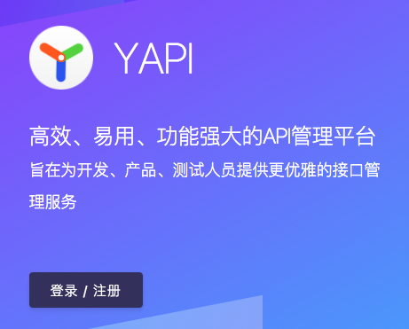</p>
<h2 id="首页">首页</h2>
<p>登录后进入首页，首页展示了分组与项目。</p>
<p>此时你作为新用户，没有任何分组与项目的权限，因此只能搜索、浏览 “公开项目” 的接口，如果在首页找不到任何项目，请联系管理员将你加入对应项目。</p>
<p><strong>1.</strong> 首页头部展示了当前所在的位置、搜索框、新建项目、查看文档和用户信息。</p>
<p><strong>2.</strong> 首页左侧展示分组信息，“分组”是“项目”的集合，只有超级管理员可以管理分组。</p>
<p><strong>3.</strong> 首页右侧是分组下的项目和成员列表，点击左侧的某个分组，右侧会出现该分组下的项目和成员信息。</p>
<p><strong>4.</strong> 点击项目右上角的星星即可关注项目，关注的项目可以在“我的关注”页面查看。</p>
<p>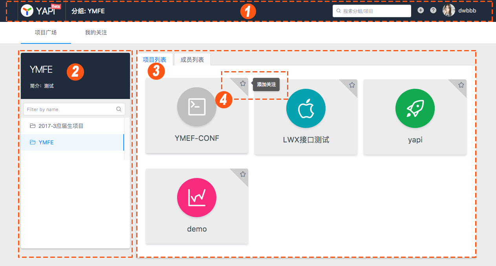</p>
<h2 id="项目页">项目页</h2>
<p>点击一个项目，进入项目页，项目页展示了属于该项目的全部接口，并提供项目、接口的全部操作。</p>
<p>此时你作为新用户，只能浏览接口信息，不可以编辑项目或接口，如果需要编辑，请联系管理员将你加入该项目。</p>
<p><strong>1.</strong> 项目页左侧的 “接口列表” 展示了该项目下的所有接口，右侧默认显示该项目下所有接口的列表。</p>
<p><strong>2.</strong> 点击左侧的某个接口，右侧会出现“预览”、“编辑”和“运行”。</p>
<p><strong>3.</strong> 点击左侧的 “测试集合” 使用<a href="#/教程/case">测试集</a>功能。</p>
<p><strong>4.</strong> 点击二级导航的“设置”，项目组长即可编辑项目信息和管理成员列表。</p>
<p><strong>5.</strong> 点击二级导航的“动态”，即可查看项目的操作日志。</p>
<p>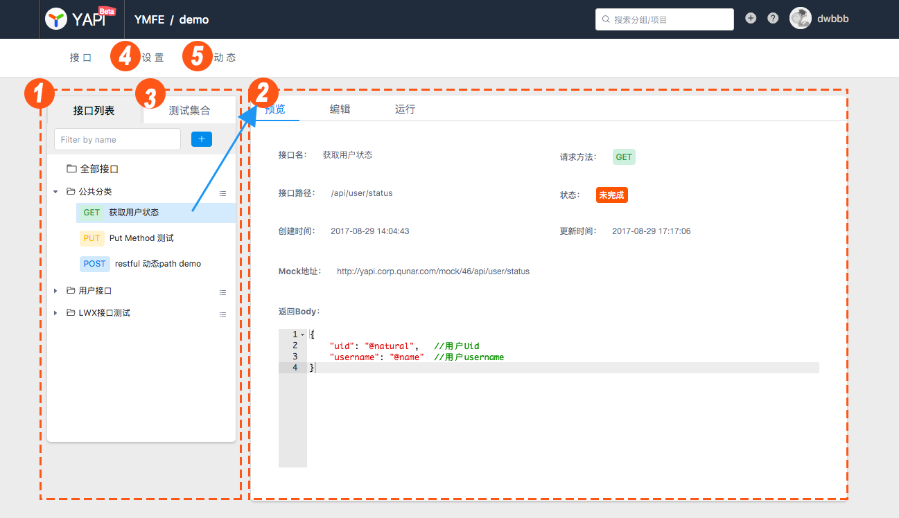</p>
<h2 id="个人中心">个人中心</h2>
<p>鼠标移动到右上角的用户头像或用户名上，即可点击“个人中心”查看个人信息。</p>
<p>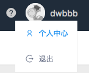</p>
<p>在个人信息页面可以查看并修改自己的用户名、密码等信息。</p>
<p>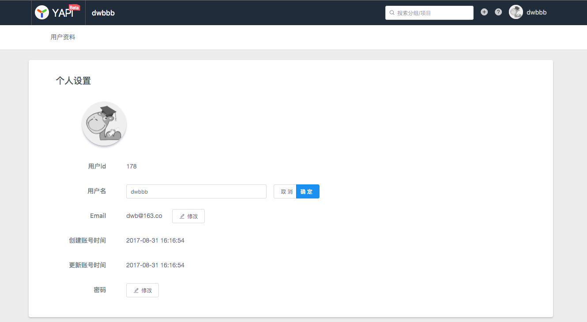</p>
</section>
<section class="chapter" data-book="教程" data-file="quickstart" hidden><h1 id="如何创建接口">如何创建接口？</h1>
<p>把大象装进冰箱分几步？三步：把冰箱门打开，把大象装进去，关门，搞定~</p>
<p>新建接口分几步？也是三步：</p>
<ul>
<li><a href="#/教程/quickstart/%E8%8E%B7%E5%8F%96%E6%9D%83%E9%99%90">获取权限</a></li>
<li><a href="#/教程/quickstart/%E9%80%89%E6%8B%A9%E9%A1%B9%E7%9B%AE">找到一个项目</a></li>
<li><a href="#/教程/quickstart/%E6%96%B0%E5%BB%BA%E6%8E%A5%E5%8F%A3">新建接口</a></li>
</ul>
<p>搞定~</p>
<h2 id="获取权限">获取权限</h2>
<p>新用户登录拥有 <code>个人空间</code> 分组下的全部权限，个人空间分组仅自己可见，因此可以在这里任意试用 YApi 的功能。</p>
<p>除此以外没有任何项目或分组的权限，只能浏览已存在分组下面的公开项目。</p>
<p>如果找不到想找的项目，可能是尚未成为项目成员，此时应联系 <code>项目组长</code> 将你加入该项目。</p>
<p><a href="#/教程/qa/Q__%E6%80%8E%E6%A0%B7%E8%81%94%E7%B3%BB%E7%BB%84%E9%95%BF%EF%BC%9F">怎样联系组长？</a></p>
<p></p>
<ul>
<li>想创建分组，请看: <a href="#/教程/manage/%E5%88%9B%E5%BB%BA%E5%88%86%E7%BB%84">创建分组</a></li>
<li>想创建项目，请看: <a href="#/教程/manage/%E5%88%9B%E5%BB%BA%E9%A1%B9%E7%9B%AE">创建项目</a></li>
</ul>
<blockquote>
<p>想了解更多权限信息，请查看<a href="#/教程/manage/%E6%9D%83%E9%99%90%E5%88%97%E8%A1%A8">权限列表</a></p>
</blockquote>
<h2 id="选择项目">选择项目</h2>
<ul>
<li>
<p>如果你已经登录，会在首页右侧看到一些项目 (可以在左侧的分组列表切换分组来查看不同分组下的项目)。</p>
</li>
<li>
<p>点击一个项目，进入该项目的详情页。</p>
</li>
</ul>
<p>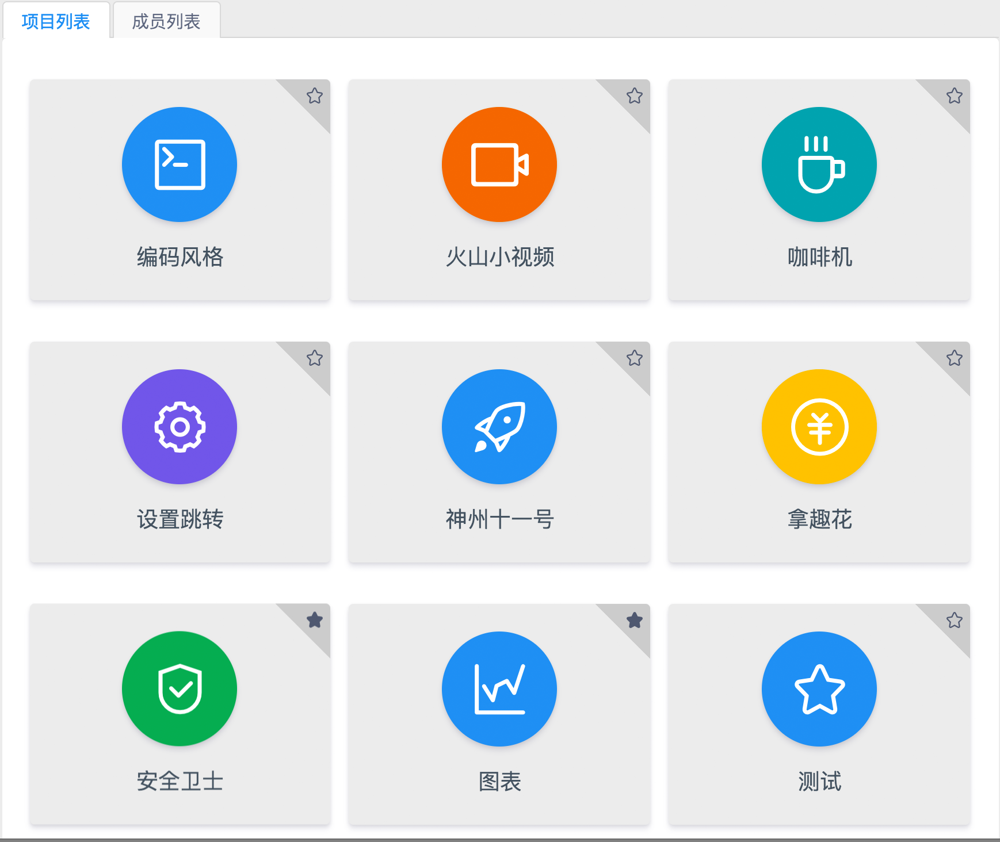</p>
<h2 id="新建接口">新建接口</h2>
<ul>
<li>点击左侧接口分组右侧的菜单按钮，选择 <code>添加接口</code>，或者点击接口列表右上角的 <code>添加接口</code>。</li>
</ul>
<p>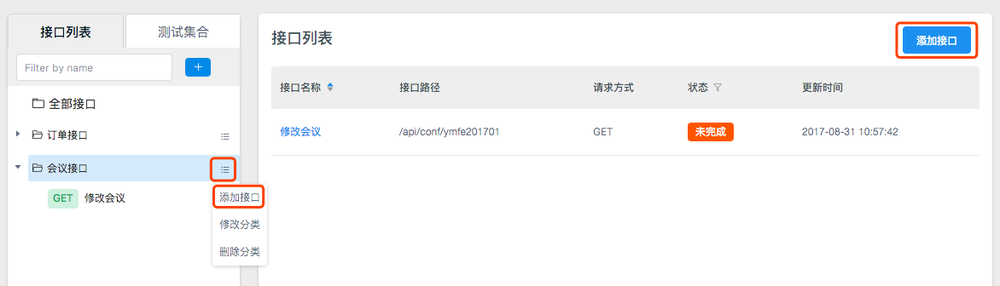</p>
<ul>
<li>选择接口分类，输入接口名称和接口路径，点击 <code>提交</code>。</li>
</ul>
<p>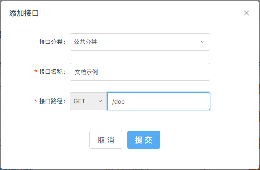</p>
<ul>
<li>恭喜你！创建了第一个YApi的接口，你可以看到在左侧看到接口名称，右侧有该接口的信息预览。</li>
</ul>
<p>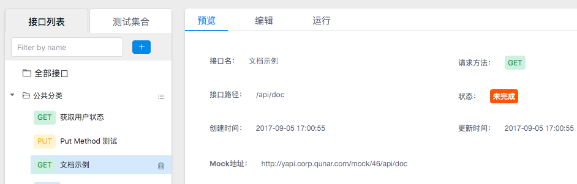</p>
</section>
<section class="chapter" data-book="教程" data-file="manage" hidden><h1 id="权限权利">权限权利</h1>
<p>接口管理的逻辑较为复杂，操作频率高，层层审批将严重拖慢生产效率，因此传统的金字塔管理模式并不适用。</p>
<p>YApi 将扁平化管理模式的思想引入到产品的权限管理中，<code>超级管理员</code> 拥有最高的权限，并将权限分配给若干 <code>组长</code>，<code>超级管理员</code> 只需管理<code>组长</code> 即可，实际上管理YAPI各大分组与项目的是“<code>组长</code>”。<code>组长</code>对分组或项目负责，一般由BU负责人/项目负责人担任。</p>
<h2 id="认识组长">认识组长</h2>
<p>组长分为 <code>分组组长</code> 与 <code>项目组长</code>，他们的关系就是 一个分组内有若干 <code>分组组长</code> ，这些 <code>分组组长</code> 在创建项目时就可以指定 <code>项目组长</code>。因此他们在职责上的区别就在于 <code>分组组长</code> 对分组负责 <code>项目组长</code> 对项目负责，二者其他具体区别如下：</p>
<p>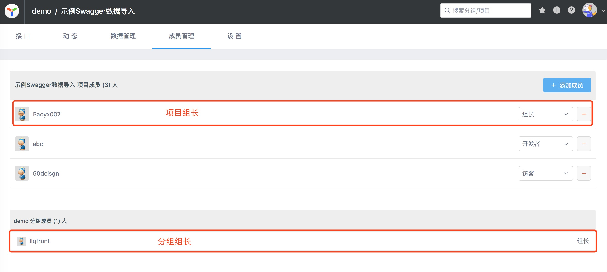</p>
<p><code>分组组长</code> 的权限包括修改分组、删除分组、创建分组下的项目。一般来说，<code>分组组长</code> 只需要对项目负责，将项目的操作任务安排给 <code>项目组长</code> 处理即可。</p>
<p><code>项目组长</code> 只属于某一个项目因此它无法操作项目所属分组，但拥有项目的全部权限，<code>项目组长</code> 是 YApi 的基层管理者，承担了 YApi 绝大部分的日常管理工作。</p>
<h2 id="创建分组">创建分组</h2>
<p>只有 <code>超级管理员</code> 有权限创建分组</p>
<p>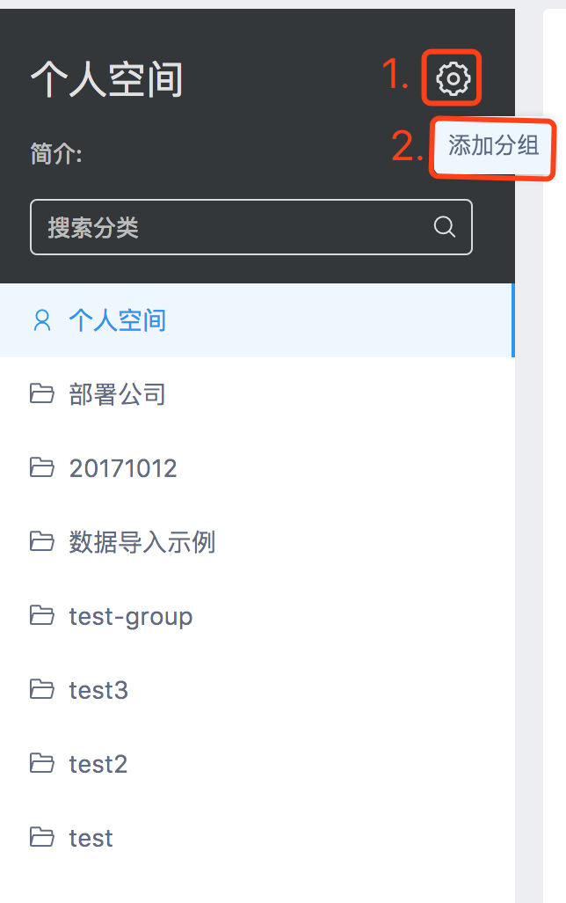</p>
<h2 id="创建项目">创建项目</h2>
<p>成为 <code>分组成员</code>，即可在分组中创建项目。</p>
<p></p>
<blockquote>
<p>想成为 <code>分组组长</code> ，在分组成员列表中找到 <code>分组组长</code>，联系 <code>分组组长</code> 将你设置为分组组长。</p>
</blockquote>
<p><a href="#/教程/qa/q1-%E6%80%8E%E6%A0%B7%E8%81%94%E7%B3%BB%E7%BB%84%E9%95%BF%EF%BC%9F">怎样联系组长？</a></p>
<h2 id="权限列表">权限列表</h2>
<p>新用户未加入项目或分组时，我们称为 <code>“游客”</code>。</p>
<h3 id="项目权限">项目权限</h3>
<table>
<thead>
<tr>
<th style="text-align:left">操作</th>
<th style="text-align:center">游客</th>
<th style="text-align:center">项目开发者</th>
<th style="text-align:center">项目组长</th>
<th style="text-align:center">超级管理员</th>
</tr>
</thead>
<tbody>
<tr>
<td style="text-align:left">浏览公开项目与接口</td>
<td style="text-align:center">✓</td>
<td style="text-align:center">✓</td>
<td style="text-align:center">✓</td>
<td style="text-align:center">✓</td>
</tr>
<tr>
<td style="text-align:left">浏览私有项目与接口</td>
<td style="text-align:center"></td>
<td style="text-align:center">✓</td>
<td style="text-align:center">✓</td>
<td style="text-align:center">✓</td>
</tr>
<tr>
<td style="text-align:left">编辑项目信息</td>
<td style="text-align:center"></td>
<td style="text-align:center">✓</td>
<td style="text-align:center">✓</td>
<td style="text-align:center">✓</td>
</tr>
<tr>
<td style="text-align:left">新建接口</td>
<td style="text-align:center"></td>
<td style="text-align:center">✓</td>
<td style="text-align:center">✓</td>
<td style="text-align:center">✓</td>
</tr>
<tr>
<td style="text-align:left">编辑接口</td>
<td style="text-align:center"></td>
<td style="text-align:center">✓</td>
<td style="text-align:center">✓</td>
<td style="text-align:center">✓</td>
</tr>
<tr>
<td style="text-align:left">编辑项目头像</td>
<td style="text-align:center"></td>
<td style="text-align:center"></td>
<td style="text-align:center">✓</td>
<td style="text-align:center">✓</td>
</tr>
<tr>
<td style="text-align:left">删除项目</td>
<td style="text-align:center"></td>
<td style="text-align:center"></td>
<td style="text-align:center">✓</td>
<td style="text-align:center">✓</td>
</tr>
</tbody>
</table>
<h3 id="分组权限">分组权限</h3>
<table>
<thead>
<tr>
<th style="text-align:left">操作</th>
<th style="text-align:center">游客</th>
<th style="text-align:center">分组开发者</th>
<th style="text-align:center">分组组长</th>
<th style="text-align:center">超级管理员</th>
</tr>
</thead>
<tbody>
<tr>
<td style="text-align:left">浏览分组</td>
<td style="text-align:center">✓</td>
<td style="text-align:center">✓</td>
<td style="text-align:center">✓</td>
<td style="text-align:center">✓</td>
</tr>
<tr>
<td style="text-align:left">在分组中新建项目</td>
<td style="text-align:center"></td>
<td style="text-align:center">✓</td>
<td style="text-align:center">✓</td>
<td style="text-align:center">✓</td>
</tr>
<tr>
<td style="text-align:left">编辑分组信息</td>
<td style="text-align:center"></td>
<td style="text-align:center"></td>
<td style="text-align:center">✓</td>
<td style="text-align:center">✓</td>
</tr>
<tr>
<td style="text-align:left">管理分组成员</td>
<td style="text-align:center"></td>
<td style="text-align:center"></td>
<td style="text-align:center">✓</td>
<td style="text-align:center">✓</td>
</tr>
<tr>
<td style="text-align:left">删除分组</td>
<td style="text-align:center"></td>
<td style="text-align:center"></td>
<td style="text-align:center">✓</td>
<td style="text-align:center">✓</td>
</tr>
</tbody>
</table>
</section>
<section class="chapter" data-book="教程" data-file="project" hidden><h1 id="项目操作">项目操作</h1>
<h2 id="基本设置">基本设置</h2>
<ul>
<li>tag 信息：可自定义tag名称和tag描述，tag信息可用在接口tag标识中;</li>
<li>mock 严格模式：开启后 mock 请求会对 query，body form 的必须字段和 json schema 进行校验;</li>
<li>开启json5：开启后允许接口请求body 和返回值中写 json 字段。yapi建议用户关闭 json5， 因为json-schema 格式可以进行接口格式校验。</li>
</ul>
<p>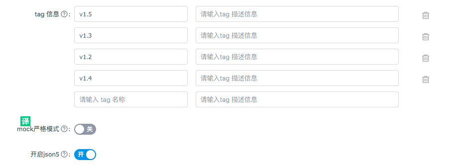</p>
<h2 id="新建项目">新建项目</h2>
<p>点击右上角的 <code>+</code> 新建项目，进入新建项目页面。</p>
<p></p>
<p>在新建项目页，填写项目信息：</p>
<blockquote>
<ul>
<li>项目名称不允许重复，包括其他分组</li>
<li>基本路径为接口统一添加了前缀</li>
<li>新建项目页只列出了部分配置，其他详细配置(环境配置、项目图标等)需要进入项目页的“设置”面板进行配置。</li>
</ul>
</blockquote>
<p>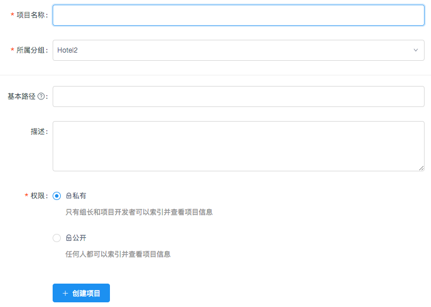</p>
<h2 id="修改项目">修改项目</h2>
<p>在项目页点击上方的 <code>设置</code> Tab 进入项目设置面板，这个面板涵盖了项目的所有配置。</p>
<p>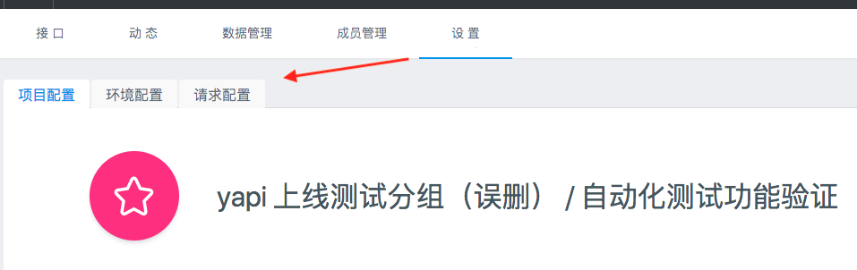</p>
<p>这里比新建项目页面新增的功能如下：</p>
<h3 id="修改项目图标">修改项目图标</h3>
<p>点击项目图标，可以修改图标及背景色：</p>
<p>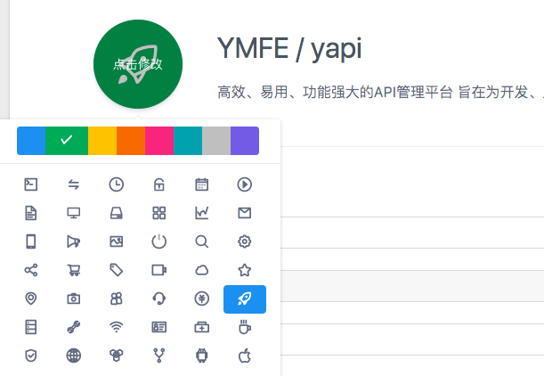</p>
<h2 id="项目迁移">项目迁移</h2>
<p>YApi 中支持项目迁移到不同的分组中。</p>
<p>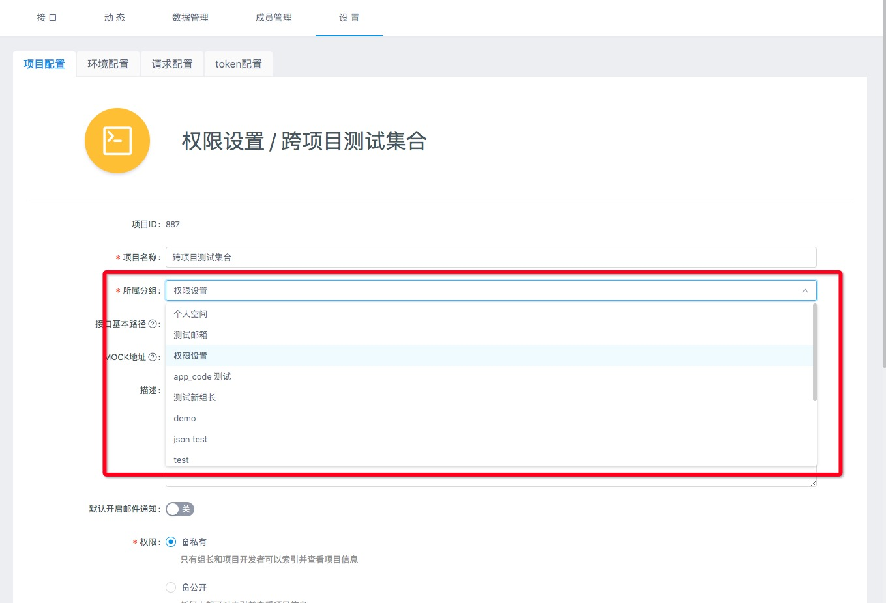</p>
<p>迁移权限： 只有管理员和该项目的 owner 有权限对位置进行修改。项目 owner 主要有创建该项目的人、项目中的组长、创建分组的人、分组中的组长。</p>
<blockquote>
<p>Tips: owner 权限判断的优先级是 项目权限 &gt; 分组权限</p>
</blockquote>
<h2 id="项目拷贝">项目拷贝</h2>
<p>该功能在 v1.3.12 版本上线，项目克隆功能可复制项目全部接口到一个新项目，如下图所示,点击红色框里面的 icon 使用。</p>
<p>YApi 支持项目复制功能，但是无法复制项目中的测试集合 list。</p>
<p>操作： 点击下图左上角的复制按钮，在弹窗中写入复制项目名称点击确定就可以完成项目复制</p>
<p>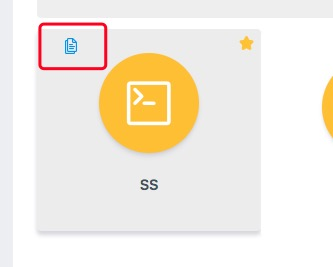</p>
<p>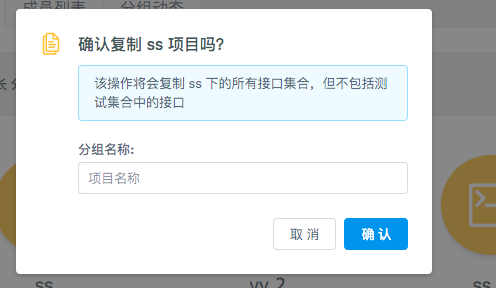</p>
<blockquote>
<p>Tips: 如果你在该分组下有新建项目的权限，那你也同时拥有复制项目的权限</p>
</blockquote>
<h2 id="删除项目">删除项目</h2>
<p>点击下方的删除按钮，输入项目名称进行删除。</p>
<blockquote>
<p>删除项目是高风险操作，因此 YApi 对这个操作进行了特别的约束。</p>
</blockquote>
<h2 id="配置环境">配置环境</h2>
<p><code>环境配置</code> 一项可以添加该项目下接口的实际环境，供 <a href="#/教程/case">接口测试</a> 使用，这里增加了全局 header，可以在项目中设置全局 header 值。在接口运行页面的选择环境 select 中也增加<code>环境配置</code>弹层。</p>
<p>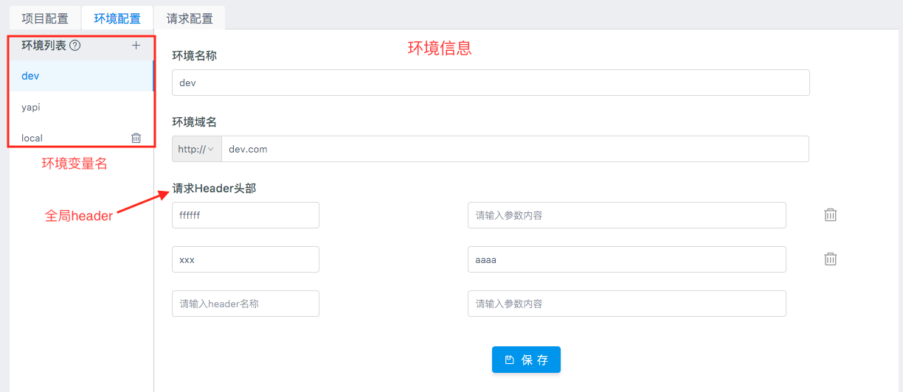</p>
<p>v1.3.21 新增全局变量，用户可以在环境列表中定义全局变量的名称和值, 接口运行或者测试集合里面可以通过 {{ global.err }} 来访问当前环境变量下定义的全局变量</p>
<p>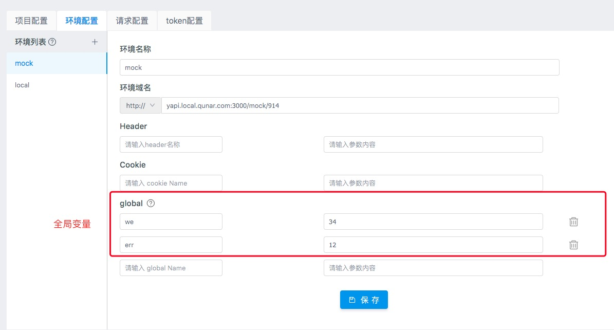</p>
<h2 id="请求配置">请求配置</h2>
<p>pre-script, 通过自定义 js 脚本方式改变请求的参数和返回的 response 数据</p>
<h3 id="请求参数示例">请求参数示例</h3>
<p>以 jquery ajax 为例，假设当前的请求参数是</p>
<pre><code>{
  url: '/api/user?id=1',
  method: 'POST',
  headers: {
    xxx: 'xxx'
  },
  data: {
    type: 1
  }
}
</code></pre>
<p>那么公共变量 context 包含以下属性：</p>
<pre><code>context = {
  pathname: '/api/user',
  query: {
    id: 1
  },
  requestHeader: {
    xxx: 'xxx'
  },
  method: 'POST',
  requestBody: {
    type:1
  }
}
</code></pre>
<p>假设我们需要在一组接口的 url 上增加一个公共的 token 参数，可以写如下自定义脚本：</p>
<pre><code>context.query.token = context.utils.md5(context.pathname + 'salt');
</code></pre>
<h3 id="返回数据示例">返回数据示例</h3>
<p>在上面的示例请求完成后，假设返回 responseData={a:1},公共变量 context 包含以下属性：</p>
<pre><code>context = {
  pathname: '/api/user',
  query: {
    id: 1
  },
  requestHeader: {
    xxx: 'xxx'
  },
  method: 'POST',
  requestBody: {
    type:1
  },
  responseData: {
    a:1
  },
  responseHeader: {
    content-type: 'application/json'
    ...
  }
}
</code></pre>
<p>假设我们需要修改响应数据 responseData a 的值为 2，可以填写如下自定义脚本：</p>
<pre><code>context.responseData.a = 2;

</code></pre>
<blockquote>
<p>（v1.3.16+新增）context.href 和 context.hostname<br>
（v1.3.17+新增）context.caseId 测试用例的唯一 key 值</p>
</blockquote>
<h3 id="storage">storage</h3>
<p>storage.setItem 兼容浏览器和服务端，并且是持久化数据存储，不会丢失，用法类似于 localStorage。
storage 一共两个 api，分别是 setItem 和 getItem</p>
<pre><code class="language-js">storage.setItem('xxx', 'token-----xxxxx')
context.query.token = storage.getItem('xxx')
</code></pre>
<h3 id="工具函数">工具函数</h3>
<pre><code>context.utils = {
  _         //underscore 函数,详细 API 查看官网 http://underscorejs.org/
  CryptoJS  // crypto-js（v1.3.21+新增）, 详细用法看 https://github.com/brix/crypto-js
  base64    //转换字符串为 base64 编码
  md5       //转换字符串为 md5 编码
  sha1      //转换字符串为 sha1 编码
  sha224    //转换字符串为 sha224 编码
  sha256    //转换字符串为 sha256 编码
  sha384    //转换字符串为 sha384 编码
  sha512    //转换字符串为 sha512 编码
  unbase64  //转换 base64 编码为字符串  
  axios     // axios 库，可用于 api 请求，官网 https://github.com/axios/axios
}
</code></pre>
<p>CryptoJS 具体用法</p>
<pre><code class="language-javascript">var data = [{ id: 1 }, { id: 2 }];

// Encrypt
var ciphertext = context.utils.CryptoJS.AES.encrypt(JSON.stringify(data), 'secret key 123');

// Decrypt
var bytes = context.utils.CryptoJS.AES.decrypt(ciphertext.toString(), 'secret key 123');
var decryptedData = JSON.parse(bytes.toString(CryptoJS.enc.Utf8));

console.log('decryptedData', decryptedData);
</code></pre>
<h3 id="异步处理-v1-3-13-支持">异步处理（v1.3.13+支持）</h3>
<p>处理请求参数，或返回数据，可能还会涉及到异步处理，比如 ajax 请求，YApi 在 v1.3.13 版本支持了异步处理。</p>
<pre><code class="language-javascript">context.promise = new Promise(function(resolve) {
  var api = context.utils.axios.get('http://yapi.local.qunar.com:3000/api/user/status');
  api.then(function(result) {
    //...
    console.log(result.data);
    resolve();
  });
});
</code></pre>
<p>promise 还可以来设置接口延迟</p>
<pre><code class="language-javascript">context.promise = new Promise(function(resolve) {
  setTimeout(function() {
    console.log('delay 1000ms');
    resolve('ok');
  }, 1000);
});
</code></pre>
<p>使用方法就是在 <code>context</code> 里面添加 <code>promise</code> 参数,并且返回一个 Promise，不熟悉 Promise 的童鞋可以查下相关用法，ajax 请求可以使用 <code>context.utils.axios</code> 库。</p>
<blockquote>
<p>处理完成后，不要忘记 <code>resolve()</code>，不然会一直处于挂起状态</p>
</blockquote>
<h2 id="token">token</h2>
<p>每个项目都有唯一的标识 token，用于以项目身份请求 openapi。</p>
<ul>
<li>token 代表「归属项目内的开发者」数据面权限：可调用 15 个开放端点（接口增改查、分类、数据导入导出、自动化测试等，完整清单见 token 配置页），<strong>私有项目同样可调用</strong>；项目配置修改（/api/project/up）与删除类操作不支持 token。</li>
<li>项目设置页展示的 token 串与查看者身份绑定，仅继承该账号在本项目内的数据面权限；「刷新」后旧 token 立即失效；账号被禁用或删除后其 token 随之失效。</li>
</ul>
<p>详细接口文档见项目设置 - token 配置页，或直接访问 <a href="/openapi-doc.html">开放接口文档</a>。</p>
<h2 id="全局mock">全局mock</h2>
<p>v1.3.21 新增全局 mock 设置，方便用户在项目层面上全局设置公共的mock数据，具体 mock 脚本详细使用方法详见 <a href="#/教程/adv_mock/%E8%87%AA%E5%AE%9A%E4%B9%89-mock-%E8%84%9A%E6%9C%AC">自定义 Mock 脚本</a></p>
<h3 id="mock-优先级说明">Mock 优先级说明</h3>
<p>请求 Mock 数据时，规则匹配优先级：Mock 期望 &gt; 自定义 Mock 脚本 &gt; 项目全局 mock 脚本 &gt; 普通 Mock。</p>
<p>如果前面匹配到 Mock 数据，后面 Mock 则不返回。</p>
</section>
<section class="chapter" data-book="教程" data-file="api" hidden><h1 id="接口设置">接口设置</h1>
<p>进入项目页，可以看到项目下的所有接口，需要注意的是，YApi有 <code>接口集合</code> 和 <code>测试集合</code> 两个概念。</p>
<ul>
<li><code>接口集合</code> 将接口进行分类，使接口结构更清晰，一个接口只能属于一个集合，且不允许与其他接口重名。</li>
<li><code>测试集合</code> 为了方便我们测试接口，<code>测试集合</code> 将若干接口组合在一起，在这里一个接口可以属于不同集合。</li>
</ul>
<h2 id="接口配置">接口配置</h2>
<p><a href="#/教程/quickstart/%E6%96%B0%E5%BB%BA%E6%8E%A5%E5%8F%A3">新建接口</a> 后，点击新添加的接口，右侧可以看到接口的预览信息，点击右侧的 <code>编辑</code> Tab项进入编辑面板。</p>
<p>在该面板中你可以看到接口的基本信息(接口名称、分类、路径)，除此以外，你还可以完善以下接口信息：</p>
<h3 id="基本设置">基本设置</h3>
<ul>
<li>接口路径：可以更改 HTTP 请求方式，并且支持 restful 动态路由，例如 /api/{id}/{name}, id和name是动态参数</li>
<li>选择分类：可以更改接口所在分类</li>
<li>状态：用于标识接口是否开发完成。</li>
<li>Tag：用于标识接口tag信息（v1.3.23+）,在接口list页可以根据tag过滤接口</li>
</ul>
<p>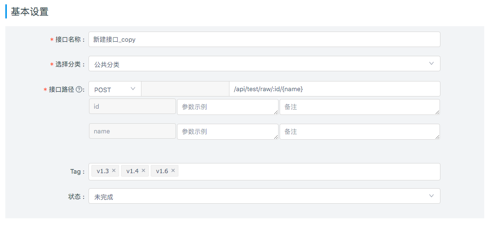</p>
<h3 id="请求参数设置">请求参数设置</h3>
<ul>
<li>Query参数： 接口 url 的查询字符串，点击『添加Query参数』按钮来添加参数，可以通过拖动来交换参数位置</li>
<li>请求Body：http 请求 body 部分，如果http请求方式是 post, put 等请求方式时会有 req_body 部分。req_body_type 形式有4种，分别是 form, json, file 和 raw 。</li>
<li>Headers:  http 请求头字段，在 req_body 形式是 form 格式下会在 header 中自动生成 'Content-Type	application/x-www-form-urlencoded'，其他3种格式也会自动生成不同 header</li>
</ul>
<p>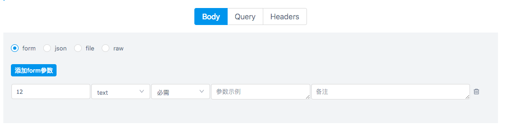</p>
<h3 id="返回数据设置">返回数据设置</h3>
<ul>
<li>返回数据分为 <code>json</code> &amp; <code>raw</code> 两种形式。基于 mockjs （具体使用方法详见<a href="#/教程/mock">Mock 介绍</a>）和 json5，使用注释方式写参数说明。 为了方便数据编写可以按F9来使用全局编辑</li>
<li>选择json-schema 则进入了 json 结构可视化编辑器形式, 数据以 json schema 格式解析 <a href="https://www.jianshu.com/p/8278eb2458c4?winzoom=1" target="_blank" rel="noopener noreferrer">快速入门 Json Schema</a>。</li>
</ul>
<p>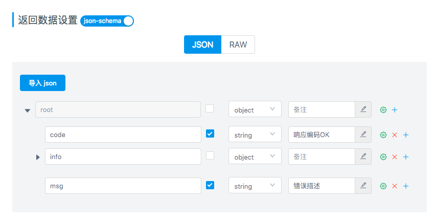</p>
<h3 id="备注-其他">备注 &amp; 其他</h3>
<ul>
<li>接口描述: 用简短的文字描述接口的作用。</li>
<li>邮件通知：开启后将此次接口的改动以邮件的形式发送至项目组所有成员和关注该项目的成员（邮件默认情况下自动开启）</li>
<li>开放接口：默认为关闭状态，用户可以在 数据导出 时选择只导出公开接口</li>
</ul>
<h2 id="接口运行">接口运行</h2>
<p>接口运行功能，是用来测试真实接口的，类似『Postman』的功能。</p>
<p>点击运行 tab ,可进入到接口测试页面，首先安装『chrome crossRequest』扩展，才可正常使用此功能。</p>
<p>点击保存按钮可把当前接口保存到测试集，方便下次调试。</p>
<blockquote>
<p>安装完插件记得刷新页面</p>
</blockquote>
<p>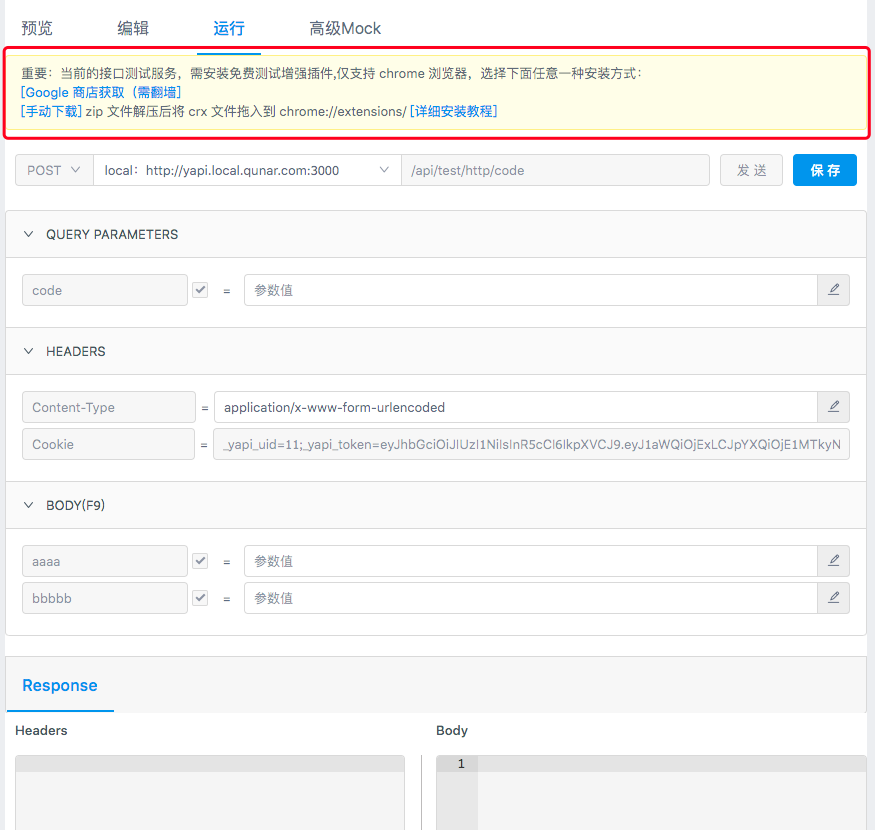</p>
<h3 id="接口返回数据验证">接口返回数据验证</h3>
<p>版本 v1.3.22 新增返回数据验证功能， 如果接口的返回数据格式为json schema 在接口运行时会对接口返回数据和定义数据格式进行校验</p>
<p>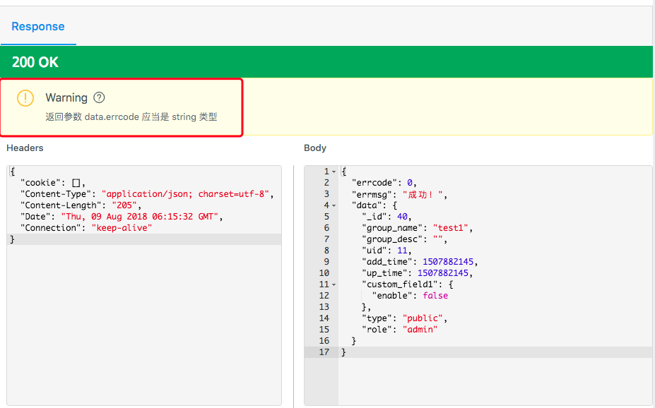</p>
</section>
<section class="chapter" data-book="教程" data-file="mock" hidden><h1 id="mock介绍">Mock介绍</h1>
<p>YApi的 Mock 功能可以根据用户的输入接口信息如协议、URL、接口名、请求头、请求参数、返回数据（<a href="#/教程/mock/mock">返回数据</a>）生成 Mock 接口，这些接口会自动生成模拟数据，创建者可以自由构造需要的数据。</p>
<p><strong>mock地址解析</strong>：<code>YApi平台网址 + mock + 您的项目id + 接口实际请求path</code></p>
<p>假设你 YApi 的部署地址为：http://yapi.xxx.com 然后用这个地址作为示例</p>
<pre><code>mockd 地址： http://yapi.xxx.com/mock/29/api/hackathon/login
</code></pre>
<blockquote>
<p>注：项目 id 可以在项目设置里查看到</p>
</blockquote>
<h2 id="定义-mock-数据示例">定义 mock 数据示例</h2>
<p>项目 -&gt; 接口编辑 -&gt; 返回数据设置</p>
<p>返回数据设置有两种方式，最新版本默认是基于 <code>json+注释</code> 的方式，另外一种是基于 <code>json-schema</code> 定义数据结构,请根据实际情况灵活选择使用。</p>
<h2 id="方式1-mockjs">方式1. mockjs</h2>
<p>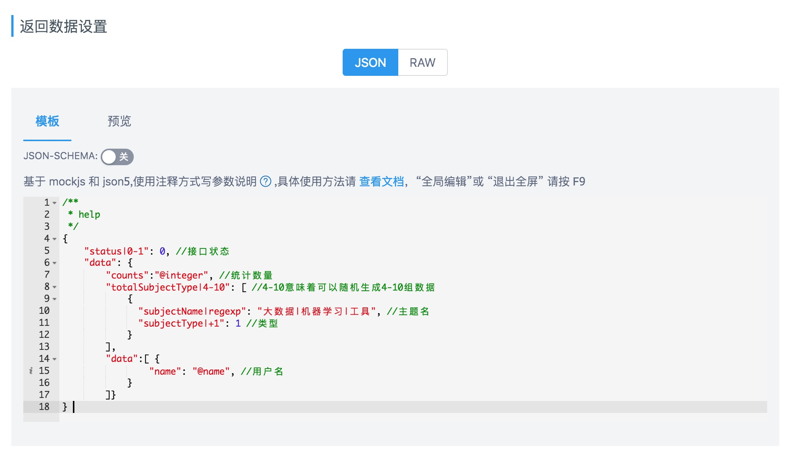</p>
<h3 id="原理">原理</h3>
<p>基于 <a href="http://mockjs.com" target="_blank" rel="noopener noreferrer">mockjs</a>，跟 Mockjs 区别是 yapi 基于 json + 注释 定义 mock 数据，无法使用 mockjs 原有的函数功能。</p>
<ol>
<li>正则表达式需要基于 rule 书写，示例如下：</li>
</ol>
<pre><code>{
  &quot;name|regexp&quot;: &quot;[a-z0-9_]+?&quot;,
  &quot;type|regexp&quot;: &quot;json|text|xml&quot;
}

</code></pre>
<ol start="2">
<li>支持替换请求的 query, body 参数</li>
</ol>
<pre><code>{
  &quot;name&quot;: &quot;${query.name}&quot;, //请求的url是/path?name=xiaoming, 返回的name字段是xiaoming
  &quot;type&quot;: &quot;${body.type}&quot;,   //请求的requestBody type=1,返回的type字段是1
  
}

</code></pre>
<ol start="3">
<li>示例</li>
</ol>
<pre><code>/**
 * 这是一个接口返回数据示例
 */

{
    &quot;errcode&quot;: 0,
    &quot;errmsg&quot;: &quot;@word&quot;,
    &quot;data&quot;: {
        &quot;id&quot;: &quot;@id&quot;, //@id 随机生成 id
        &quot;name&quot;: &quot;@name&quot; //@name 随机生成用户名
    }
}

</code></pre>
<p>详细使用文档请查看：<a href="http://mockjs.com/examples.html" target="_blank" rel="noopener noreferrer">Mockjs 官网</a></p>
<h2 id="方式2-json-schema">方式2. json-schema</h2>
<p>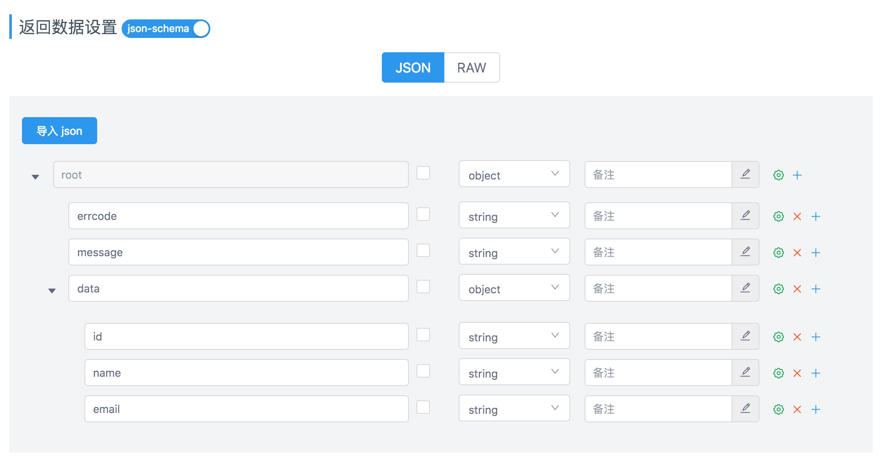</p>
<p>开启 json-schema 功能后，根据 json-schema 定义的数据结构，生成随机数据。</p>
<h3 id="如何生成随机的邮箱或-ip-该方法在v1-3-22之后不再适用">如何生成随机的邮箱或 ip(该方法在v1.3.22之后不再适用)？</h3>
<p>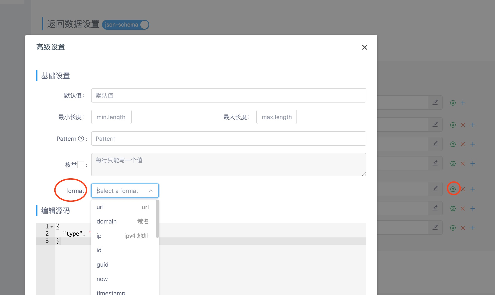</p>
<p>点击高级设置，选择 <code>format</code> 选项，比如选择 <code>email</code> 则该字段生成随机邮箱字符串。</p>
<h3 id="集成-mockjs">集成 mockjs</h3>
<p>基本书写方式为 mock 的数据占位符@xxx, 具体字段详见<a href="http://mockjs.com/examples.html" target="_blank" rel="noopener noreferrer">Mockjs 官网</a>
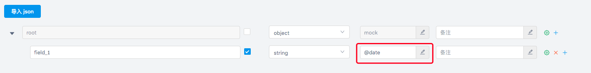
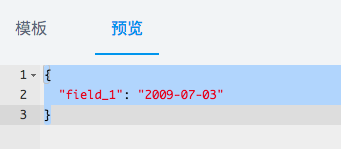</p>
<blockquote>
<p>如果不是以@字符开头的话或者匹配不到Mockjs中的占位符就会直接生成输入的值</p>
</blockquote>
<h2 id="如何使用-mock">如何使用 Mock</h2>
<h3 id="1-在-js-代码直接请求yapi提供的-mock-地址-不用担心跨域问题">1 在 js 代码直接请求yapi提供的 mock 地址（不用担心跨域问题）</h3>
<p>在代码直接请求 yapi 提供的 mock 地址，以 jQuery 为例：</p>
<pre><code class="language-javascript">let prefix = 'http://yapi.xxx.com/mock/2817'
$.post(prefix+'/baseapi/path', {username: 'xxx'}, function(res){
    console.log(res) //返回上图预览部分的数据
})
</code></pre>
<h3 id="2-基于本地服务器反向代理">2 基于本地服务器反向代理</h3>
<p>优点:不用修改项目代码</p>
<h4 id="2-1-基于-nginx-反向代理">2.1 基于 nginx 反向代理</h4>
<pre><code class="language-nginx">location /baseapi
{
proxy_pass   http://yapi.xxx.com/mock/2817/baseapi; #baseapi后面没有&quot;/&quot;
}
</code></pre>
<h4 id="2-1-基于-charles-代理">2.1 基于 Charles 代理</h4>
<p>点击 Charles 工具栏下的 tools &gt;&gt; Rewrite Settings 填写如下信息：</p>
<p>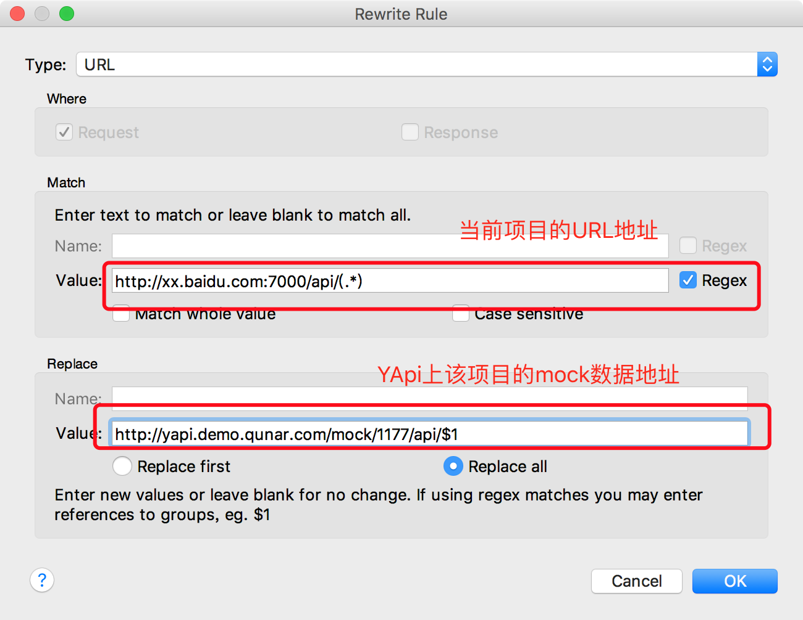</p>
<h2 id="mock请求严格模式">mock请求严格模式</h2>
<p>版本 v1.3.22 新增 mock 接口请求字段参数验证功能，具体使用方法如下：</p>
<ol>
<li>
<p>打开 项目 -&gt; 设置 开启 mock 严格模式</p>
</li>
<li>
<p>针对 query, form 中设置的必须字段会进行必填校验
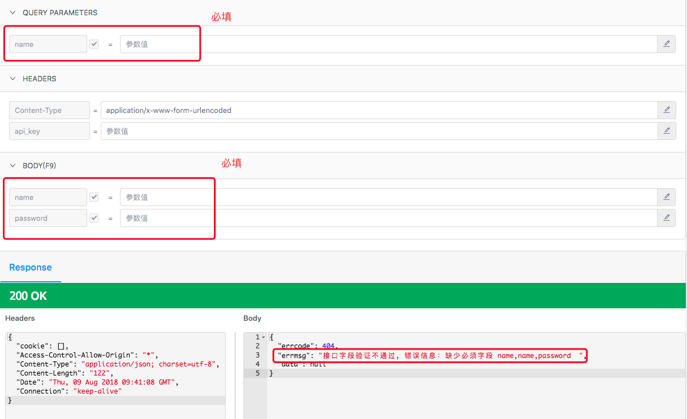</p>
</li>
<li>
<p>针对 req_body_type 是json schema 格式的数据进行校验</p>
</li>
</ol>
<p>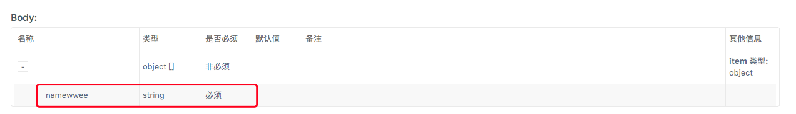
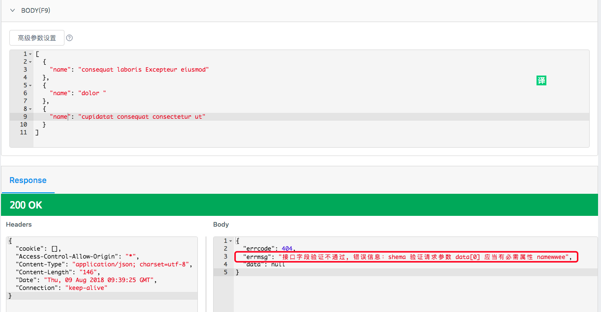</p>
</section>
<section class="chapter" data-book="教程" data-file="adv_mock" hidden><h1 id="高级mock">高级Mock</h1>
<p>高级 Mock 分为<code>Mock 期望</code>和<code>自定义 Mock 脚本</code>两种方式。</p>
<h2 id="mock-期望">Mock 期望</h2>
<p>在测试时，很多时候需要根据不同的请求参数、IP 返回不同的 HTTP Code、HTTP 头和 JSON 数据。</p>
<p>Mock 期望就是根据设置的请求过滤规则，返回期望数据。</p>
<h3 id="使用方法">使用方法</h3>
<ol>
<li>进入接口详情页，点击『高级 Mock』选项。
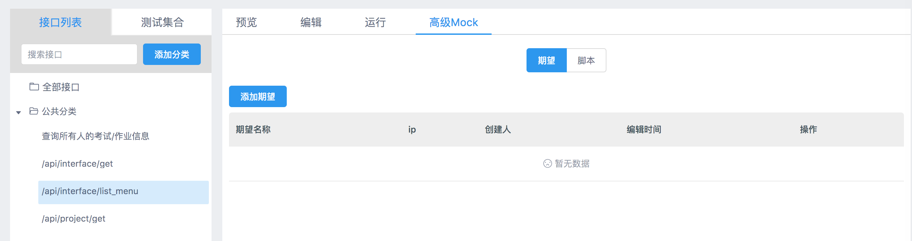</li>
<li>点击『添加期望』，填写过滤规则以及期望返回数据，点击『确定』保存。
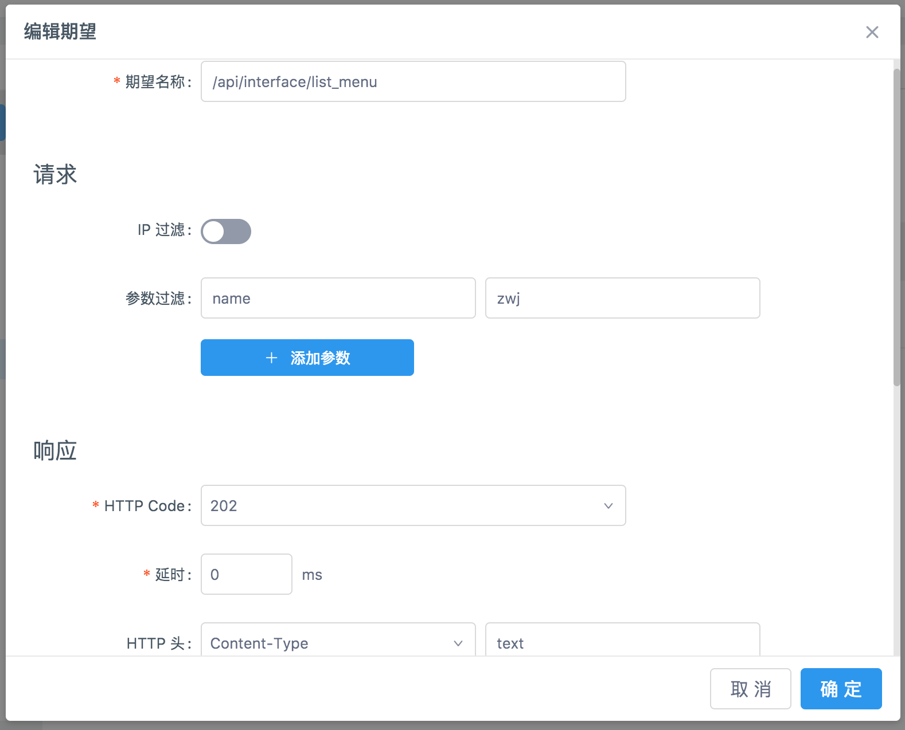
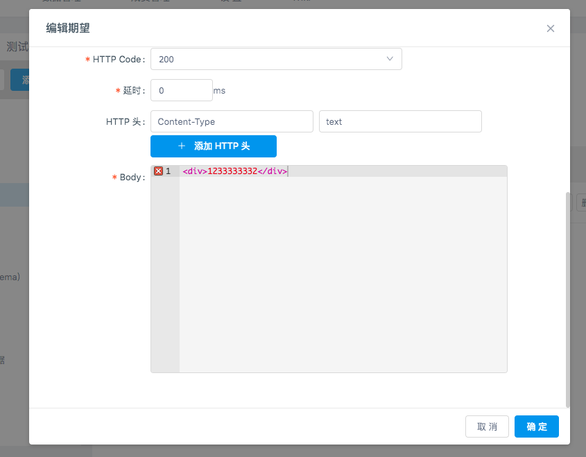</li>
<li>然后尝试在浏览器里发送符合规则的请求，查看返回的数据是否符合期望。
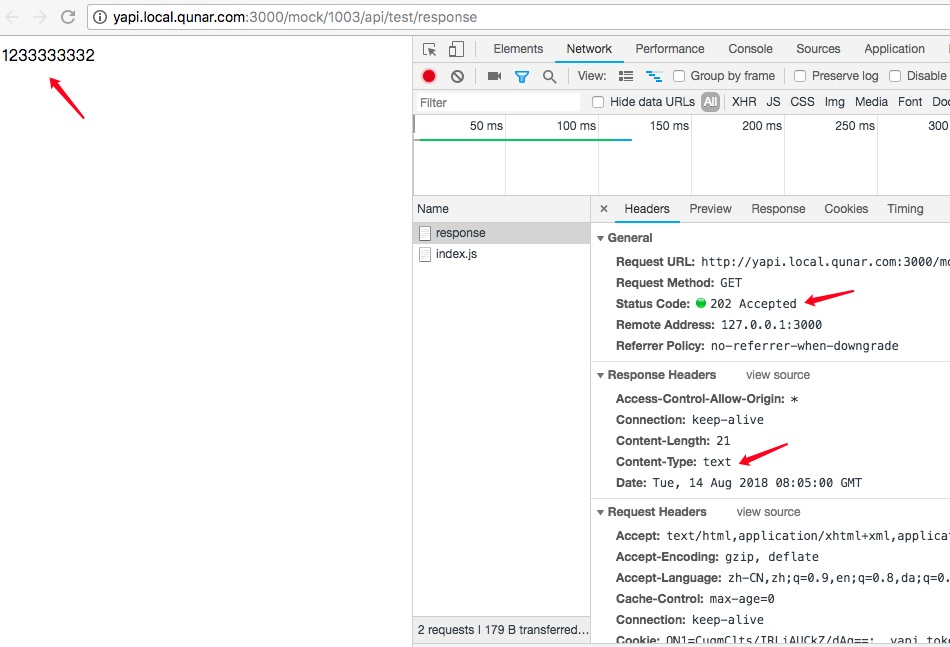</li>
</ol>
<h3 id="期望填写">期望填写</h3>
<p>基本信息</p>
<ul>
<li>期望名称：给此条期望命名</li>
<li>IP 过滤：请求的 IP 是设置的地址才可能返回期望。默认 IP 过滤关闭，任何 IP 地址都可能返回期望。</li>
<li>参数过滤：请求必须包含设置的参数，并且值相等才可能返回期望。参数可以在 Body 或 Query 中。</li>
</ul>
<p>响应</p>
<ul>
<li>HTTP Code：期望响应的 HTTP 状态码</li>
<li>延时：期望响应的延迟时间</li>
<li>HTTP 头：期望响应带有的 HTTP 头</li>
<li>返回 JSON：期望返回的 JSON 数据</li>
</ul>
<h2 id="自定义-mock-脚本">自定义 Mock 脚本</h2>
<p>在前端开发阶段，对于某些接口，业务相对复杂，而 UI 端也需要根据接口返回的不同内容去做相应的处理。</p>
<p>YApi 提供了写 JS 脚本方式处理这一问题，可以根据用户请求的参数修改返回内容。</p>
<h3 id="全局变量">全局变量</h3>
<p>请求</p>
<ul>
<li><code>header</code> 请求的 HTTP 头</li>
<li><code>params</code> 请求参数，包括 Body、Query 中所有参数</li>
<li><code>cookie</code> 请求带的 Cookies</li>
</ul>
<p>响应</p>
<ul>
<li>
<p><code>mockJson</code>
接口定义的响应数据 Mock 模板</p>
</li>
<li>
<p><code>resHeader</code>
响应的 HTTP 头</p>
</li>
<li>
<p><code>httpCode</code>
响应的 HTTP 状态码</p>
</li>
<li>
<p><code>delay</code>
Mock 响应延时，单位为 ms</p>
</li>
<li>
<p><code>Random</code>
Mock.Random 方法，可以添加自定义占位符,详细使用方法请查看 <a href="https://github.com/nuysoft/Mock/wiki/Mock.Random" target="_blank" rel="noopener noreferrer">Wiki</a></p>
</li>
</ul>
<h3 id="使用方法-1">使用方法</h3>
<ol>
<li>首先开启此功能</li>
<li>Mock 脚本就是用 JavaScript 对 <code>mockJson</code> 变量修改,请避免被全局变量(httpCode, resHeader, delay)的修改</li>
</ol>
<h3 id="示例1-根据请求参数重写-mockjson">示例1, 根据请求参数重写 mockJson</h3>
<pre><code>if(params.type == 1){
  mockJson.errcode = 400;
  mockJson.errmsg = 'error';
}

if(header.token == 't'){
  mockJson.errcode = 300;
  mockJson.errmsg = 'error';
}

if(cookie.type == 'a'){
  mockJson.errcode = 500;
  mockJson.errmsg = 'error';
}

</code></pre>
<h3 id="示例2-生成高度自定义数据内容">示例2, 生成高度自定义数据内容</h3>
<pre><code>var a = [1,1,1,1,1,1,1,1,1,1]

mockJson = {
    errcode: 0,
    email: Random.email('qq.com'),
    data: a.map(function(item){
        return Random.city() + '银行'
    })
}

</code></pre>
<h2 id="mock-优先级说明">Mock 优先级说明</h2>
<p>请求 Mock 数据时，规则匹配优先级：Mock 期望 &gt; 自定义 Mock 脚本 &gt; 项目全局 mock 脚本 &gt; 普通 Mock。</p>
<p>如果前面匹配到 Mock 数据，后面 Mock 则不返回。</p>
</section>
<section class="chapter" data-book="教程" data-file="case" hidden><h1 id="自动化测试">自动化测试</h1>
<p>传统的接口自动化测试成本高，大量的项目没有使用自动化测试保证接口的质量，仅仅依靠手动测试，是非常不可靠和容易出错的。</p>
<p>YApi 为了解决这个问题，开发了可视化接口自动化测试功能，只需要配置每个接口的入参和对 RESPONSE 断言，即可实现对接口的自动化测试，大大提升了接口测试的效率。</p>
<h2 id="第一步-测试集合">第一步，测试集合</h2>
<p>使用 YApi 自动化测试，第一步需要做得是创建测试集合和导入接口,点击添加集合创建，创建完成后导入接口(同一个接口可以多次导入)。</p>
<p>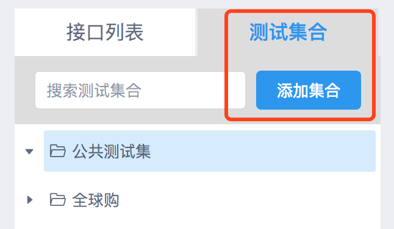</p>
<p>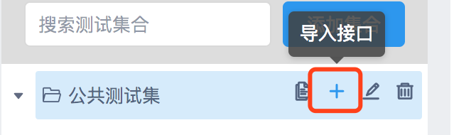</p>
<h2 id="第二步-编辑测试用例">第二步，编辑测试用例</h2>
<p>编写测试用例主要涉及两个方面，一个是请求参数，另外一个是断言脚本。</p>
<h3 id="编辑请求参数">编辑请求参数</h3>
<p>请求参数可以填写期望的字符串，YApi 还提供了 Mock 参数和 变量参数。Mock参数用来生成随机字符串，变量参数是为了解决请求参数依赖其他接口的返回数据或参数。</p>
<h4 id="mock-参数">Mock 参数</h4>
<p>Mock 参数每次请求都会生成随机字符串</p>
<p>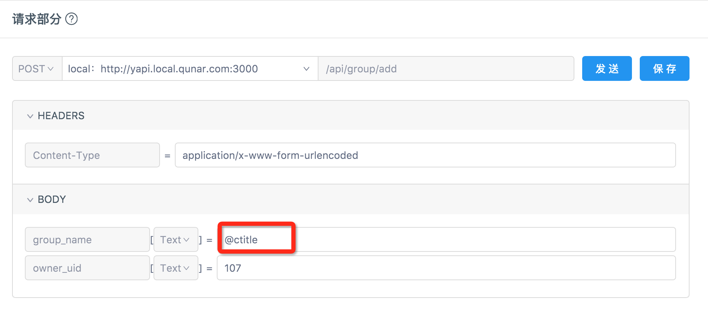</p>
<h5 id="变量参数">变量参数</h5>
<p>YApi 提供了强大的变量参数功能，你可以在测试的时候使用前面接口的 <code>参数</code> 或 <code>返回值</code> 作为 <code>后面接口的参数</code>，即使接口之间存在依赖，也可以轻松 <strong>一键测试~</strong></p>
<blockquote>
<p>Tips: 参数只能是测试过程中排在前面的接口中的变量参数</p>
</blockquote>
<p>格式：</p>
<pre><code>$.{key}.{params|body}.{path}
</code></pre>
<p>例如：现有两个接口，分别是“导航标题”和“文章列表”
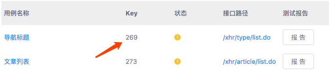</p>
<p>文章列表接口需要传参数: <code>当前标题(id)</code>，而这个 id 需要通过 <code>导航标题</code> 的返回值获取，这时应在 <code>文章列表</code> 的参数输入框中根据前者的 key 找到对应 id。</p>
<p><code>导航标题</code> 的参数和返回值有如下结构：</p>
<p>参数：
</p>
<p>返回值：
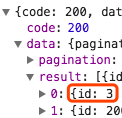</p>
<p>则 <code>文章列表</code> 的参数可以如下配置：
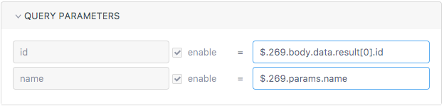</p>
<p>其中 <strong>$.</strong> 是使用 <strong>动态变量</strong> 的标志，$.269.<strong>params</strong> 即表示 key 值为 269 用例的请求参数，$.269.<strong>body</strong> 即表示 key 值为 269 用例的返回值。</p>
<p>如果 requestBody 是 json 格式也可以在 json 中写变量参数，如下图：
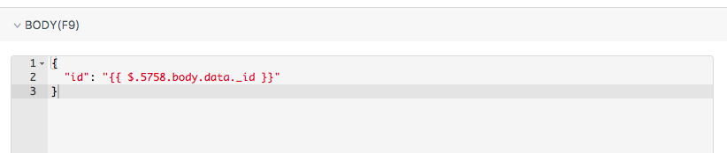</p>
<blockquote>
<p>Tips: 上下拖动测试集合的列表项可以调整测试的顺序。</p>
</blockquote>
<p>目前 yapi 中的<code>query</code>，<code>body</code>,<code>header</code>和<code>pathParam</code>的输入参数已经支持点击选择功能。无需自己填写表达式，只需在弹窗中选择需要展示的表达式即可。 输入选项包括<code>常量</code>，<code>mock数据</code>，在测试集合中也支持<code>变量</code>选择。具体用法：单击编辑按钮打开表达式生成器，点击需要的数据创建表达式，这里也可以实时查看表达式结果。</p>
<p>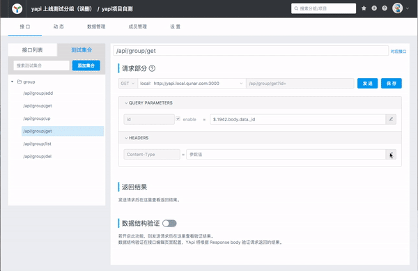</p>
<blockquote>
<p>Tips: 在测试集合中插入变量参数可以会出现下图的提示信息，这是正常现象。因为该参数只能在各个接口顺序执行的时候才能拉到变量参数中的值</p>
</blockquote>
<p>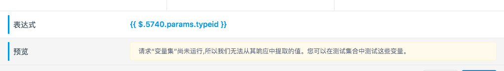</p>
<h3 id="编写断言脚本">编写断言脚本</h3>
<p>编写完请求参数，可通过 js 脚本写断言，实现精准测试，在接口用例页面点击 Test 编辑。</p>
<p>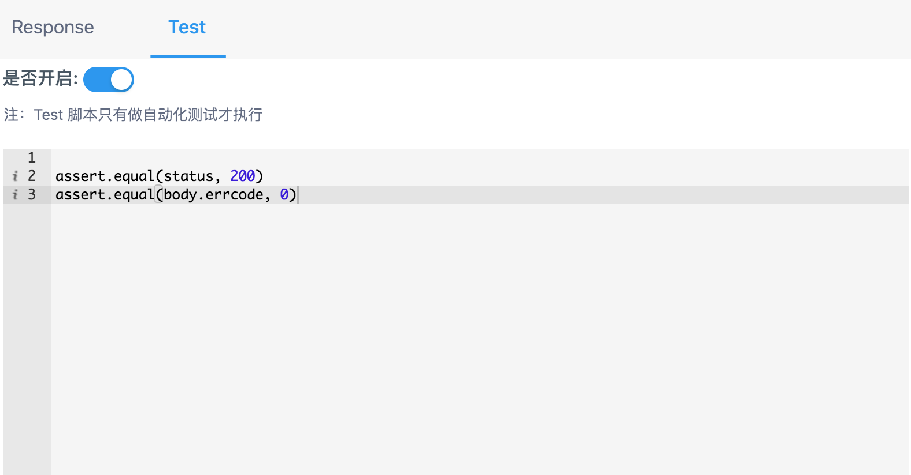</p>
<h2 id="第三步-运行自动化测试">第三步，运行自动化测试</h2>
<p>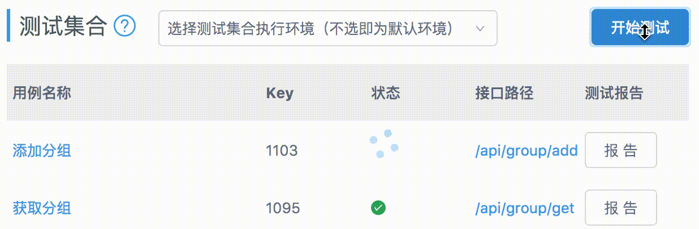</p>
<p>在测试列表可以看到每个测试用例的 key,还有 开始测试、报告等功能</p>
<p>点击开始测试会按照 case 定义的参数从上往下一个一个进行测试，如果顺序有问题，可以拖动调整</p>
<p>测试完成之后，点击报告查看该次请求的结果</p>
<h2 id="断言脚本公共变量">断言脚本公共变量</h2>
<h3 id="1-assert">1.assert</h3>
<p>断言函数，详细 api 可查看 <a href="https://nodejs.org/dist/latest-v8.x/docs/api/assert.html" target="_blank" rel="noopener noreferrer">document</a></p>
<h4 id="常用-api">常用 api</h4>
<ul>
<li>
<p>assert(value)</p>
<p>判断 value 是否为 truth, 例如 assert(1) 通过， assert(0) 不通过，只要 value 不是 null, 0, false 等值验证通过</p>
</li>
<li>
<p>assert.equal(actual, expected)</p>
<p>判断 actual 是否等于 expected，例如 assert(1, 1)通过</p>
</li>
<li>
<p>assert.notEqual(actual, expected)</p>
<p>判断 actual 是否不等于 expected</p>
</li>
<li>
<p>assert.deepEqual(actual, expected)</p>
<p>假设： actual = {a:1} 是一个对象，即便 expected = {a:1}，如果使用 assert.equal 可能也是不相等的，因为在 js 引用的只是对象的一个指针，需要使用 assert.deepEqual 比较两个对象是否相等</p>
</li>
<li>
<p>assert.notDeepEaual(actual, expected)</p>
<p>深度比较两个对象是否不相等</p>
</li>
</ul>
<h4 id="2-status">2.status</h4>
<p>http 状态码</p>
<h4 id="3-params">3.params</h4>
<p>http request params, 合并了 query 和 body</p>
<h4 id="4-body">4.body</h4>
<p>返回 response body</p>
<h4 id="5-header">5.header</h4>
<p>返回 response header</p>
<h4 id="6-records">6.records</h4>
<p>记录的 http 请求信息，假设需要获取 key 为 555 的接口参数或者响应数据，可通过 records[555].params 或 records[555].body 获取</p>
<h4 id="7-log">7.log</h4>
<p>log（message） 函数,调试时使用，log 信息仅仅在断言失败后打印,失败断言前的信息</p>
<pre><code>log(234)   
assert.equal(status, 400)
log(123)
</code></pre>
<p>输出结果：
log: 234<br>
AssertionError: 200 == 400</p>
<h3 id="示例">示例</h3>
<pre><code>
assert.equal(body.errcode, 0)
assert.equal(body.data.group_name, 'testGroup')
assert.equal(status, 200)
</code></pre>
<h2 id="服务端自动化测试">服务端自动化测试</h2>
<p>开始测试功能是在浏览器跑自动化测试，他依赖于浏览器的使用环境。服务端自动化测试功能是在YApi服务端跑自动化测试，不需要依赖浏览器环境，只需要访问 YApi 提供的 url 链接就能跑自动化测试，非常的简单易用，而且可以集成到 jenkins。</p>
<h3 id="详细使用方法">详细使用方法</h3>
<p>点击服务端测试，出现如下弹窗，用户访问该 url 就可以获取当前测试用例的所有测试结果。</p>
<p>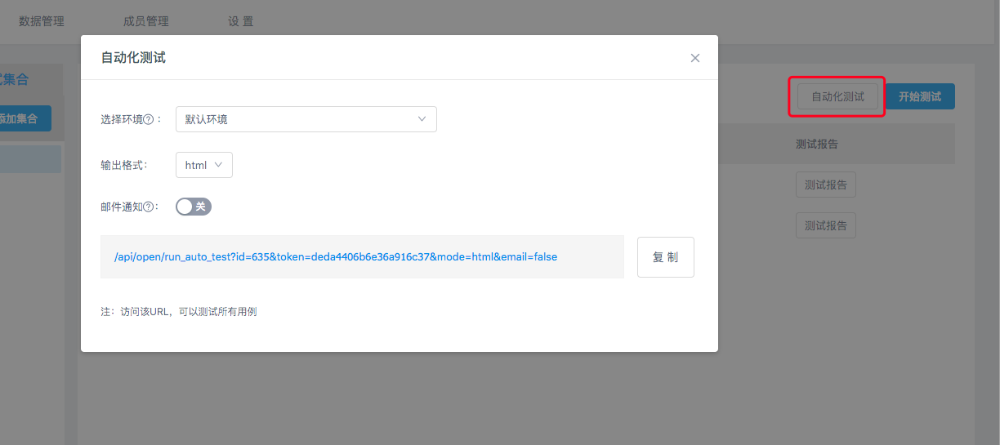
</p>
<h2 id="配置通用规则">配置通用规则</h2>
<p></p>
<p>配置通用规则能够使自动化测试，可以基于通用的规则去控制，无需手动一个一个维护case.</p>
</section>
<section class="chapter" data-book="教程" data-file="data" hidden><h1 id="数据导入">数据导入</h1>
<p>在数据管理可快速导入其他格式的接口数据，方便快速添加接口。YApi 目前支持 postman, swagger, har 数据导入。</p>
<p>v1.3.23+ 增加数据导入的3种同步方式  normal, good, mergin</p>
<ol>
<li>普通模式(normal)：不导入已存在的接口；</li>
<li>智能合并(good)：已存在的接口，将合并返回数据的 response，适用于导入了 swagger 数据，保留对数据结构的改动；例如，用户对字段code 添加了mock信息, 当再次数据导入的时候 mock 字段将不会被覆盖</li>
<li>完全覆盖(mergin)：不保留旧数据，完全使用新数据，适用于接口定义完全交给后端定义， 默认为 normal</li>
</ol>
<h2 id="postman-数据导入">Postman 数据导入</h2>
<p>1.首先在 postman 导出接口</p>
<p></p>
<p>2.选择 collection_v1,点击 export 导出接口到文件 xxx</p>
<p></p>
<p>3.打开 yapi 平台，进入到项目页面，点击数据管理，选择相应的分组和 postman 导入  方式， 选择刚才保存的文件路径，开始导入数据</p>
<p></p>
<h2 id="har-数据导入">HAR 数据导入</h2>
<p>可用 chrome 实现录制接口数据的功能，方便开发者快速导入项目接口</p>
<p>1.打开 Chrome 浏览器开发者工具，点击 network，首次使用请先 clear 所有请求信息，确保录制功能开启（红色为开启状态）</p>
<p></p>
<p>2.操作页面实际功能，完成后点击 save as HAR with content,将数据保存到文件 xxx</p>
<p></p>
<p>3.打开 yapi 平台，进入到项目页面，点击数据管理，选择相应的分组和 har 导入  方式， 选择刚才保存的文件路径，开始导入数据</p>
<p></p>
<blockquote>
<p>Tips: har 数据导入只支持 response.content.mimeType 为 application/json 类型的数据</p>
</blockquote>
<h2 id="swagger-数据导入">Swagger 数据导入</h2>
<p>什么是 Swagger ？
<a href="https://www.gitbook.com/book/huangwenchao/swagger/details" target="_blank" rel="noopener noreferrer">Swagger从入门到精通</a></p>
<p>1.生成 JSON 语言编写的 Swagger API 文档文件   例如这样的数据 （<a href="http://petstore.swagger.io/v2/swagger.json" target="_blank" rel="noopener noreferrer">http://petstore.swagger.io/v2/swagger.json</a>），可以将其内容复制到 JSON 文件中。</p>
<blockquote>
<p>Tips: v1.3.19 版本开始支持 swagger url 导入功能</p>
</blockquote>
<p>2.打开 yapi 平台，进入到项目页面，点击数据管理，选择相应的分组和 swagger 导入  方式， 选择刚才的文件，开始导入数据</p>
<p></p>
<p></p>
<p></p>
<h2 id="yapi-接口-json-数据导入">YApi 接口 JSON 数据导入</h2>
<p>该功能在 v1.3.12 版本上线，可导入在 yapi 平台导出的 json 接口数据。</p>
<p></p>
<h2 id="通过命令行导入接口数据">通过命令行导入接口数据</h2>
<p>YApi 支持通过命令行导入接口数据，他的应用场景是做自动化集成，比如配合 swagger ，接口文档前端不用维护，交由后端生成。</p>
<h3 id="使用方法">使用方法</h3>
<p>第一步，确保 <code>yapi-cli &gt;= 1.2.7</code> 版本，如果低于此版本请升级 <code>yapi-cli</code> 工具</p>
<pre><code>npm install -g yapi-cli
</code></pre>
<p>第二步，在任意一个目录下新建配置文件 <code>yapi-import.json</code>，内容如下：</p>
<pre><code class="language-json">{
  &quot;type&quot;: &quot;swagger&quot;,
  &quot;token&quot;: &quot;17fba0027f300248b804&quot;,
  &quot;file&quot;: &quot;swagger.json&quot;,
  &quot;merge&quot;: &quot;normal&quot;,
  &quot;server&quot;: &quot;http://yapi.local.qunar.com:3000&quot;
}
</code></pre>
<p><code>type</code> 是数据数据方式，目前官方只支持 swagger</p>
<p><code>token</code> 是项目 token，在 <code>项目设置 -&gt; token</code> 设置获取</p>
<p><code>file</code> 是 swagger 接口文档文件，可使用绝对路径或 url</p>
<p><code>merge</code> 有三种导入方式(v1.3.23+支持) normal, good, mergin</p>
<ol>
<li>普通模式(normal)：不导入已存在的接口；</li>
<li>智能合并(good)：已存在的接口，将合并返回数据的 response，适用于导入了 swagger 数据，保留对数据结构的改动；</li>
<li>完全覆盖(mergin)：不保留旧数据，完全使用新数据，适用于接口定义完全交给后端定义， 默认为 normal</li>
</ol>
<p><code>server</code> 是 yapi 服务器地址</p>
<p>第三步，在<code>新建配置文件的当前目录</code>，执行下面指令</p>
<pre><code>yapi import
</code></pre>
</section>
<section class="chapter" data-book="教程" data-file="export-data" hidden><h1 id="数据导出">数据导出</h1>
<p>为了方便开发者将接口数据分析给第三方或其他使用者，YApi 内置了方便易用的接口数据导出功能。</p>
<h2 id="使用教程">使用教程</h2>
<p>在 项目 -&gt; 数据管理，选择需要导出的数据方式，一共有三种导出方式，html,markdown,json。然后点击导出按钮，将会下载数据文件。</p>
<p></p>
</section>
<section class="chapter" data-book="教程" data-file="plugin-index" hidden><h2 id="安装">安装</h2>
<p>假设插件名为：yapi-plugin-demo,安装方法如下：</p>
<pre><code>cd {项目目录}
yapi plugin yapi-plugin-demo
</code></pre>
<h2 id="卸载插件">卸载插件</h2>
<p>假设插件名为：yapi-plugin-demo,卸载方法如下：</p>
<pre><code>cd {项目目录}
yapi unplugin yapi-plugin-demo
</code></pre>
</section>
<section class="chapter" data-book="教程" data-file="plugin-dev" hidden><h2 id="运行开发服务器">运行开发服务器</h2>
<pre><code class="language-bash">npm install
npm install -g ykit #依赖 ykit 
npm run dev #启动开发服务器
</code></pre>
<h2 id="加载插件">加载插件</h2>
<p>在config.json plugins配置项，加入 demo 插件,</p>
<pre><code class="language-json">{
  &quot;port&quot;: &quot;3000&quot;,
  &quot;db&quot;: {
    &quot;servername&quot;: &quot;127.0.0.1&quot;,
    &quot;DATABASE&quot;: &quot;yapi&quot;
  },
  ...
  &quot;plugins&quot;: [{
    &quot;name&quot;: &quot;demo&quot;,
    &quot;options&quot;: {}
  }]
}
</code></pre>
<h2 id="初始化目录">初始化目录</h2>
<p>可参考 项目vendors/exts 目录下的插件</p>
<p>在 vendors/node_modules 下新建 yapi-plugin-demo 目录和 npm init,最后生成的目录结构如下</p>
<pre><code>yapi-plugin-demo
  client.js  //客户端入口文件
  server.js  //服务端入口文件
  packjson.json //插件依赖管理
  index.js //插件配置文件
</code></pre>
<h2 id="index-js-配置说明">index.js 配置说明</h2>
<pre><code>server: true // 如果为true,表名该插件需要经过后端服务器加载
client: true // 如果为true,表名该插件需要经过前端编译
</code></pre>
<h2 id="server-js">server.js</h2>
<p>在server.js 需要导出一个 function ,例如： module.exports = function(options){}</p>
<p>options 可在 config.json 配置</p>
<h3 id="绑定钩子">绑定钩子</h3>
<pre><code>this.bindHook(hookname, listener) //绑定钩子
hookname //钩子名
listener //监听函数，可以是普通函数，也可以是 asyncFunction
</code></pre>
<h3 id="如何使用-yapi-vendors-server-目录下的模块">如何使用 YApi vendors/server 目录下的模块</h3>
<p>可以直接 require vendors 目录下的模块，注意：后端 node 不能使用 import关键字，只能使用 require
例如： require('yapi')</p>
<h3 id="controller-和-model">controller 和 model</h3>
<p>新增 controller 需要继承 baseController(controller/base.js)</p>
<p>新增 model 需要继承 baseModel(model/base.js)</p>
<h2 id="client-js">client.js</h2>
<h3 id="绑定钩子-同后端-server-js">绑定钩子(同后端 server.js )</h3>
<pre><code>this.bindHook(hookname, listener) //绑定钩子
hookname //钩子名
listener //监听函数，可以是普通函数，也可以是 asyncFunction
</code></pre>
</section>
<section class="chapter" data-book="教程" data-file="plugin-list" hidden><h2 id="怎么分享我的插件">怎么分享我的插件？</h2>
<p>Fork <a href="https://github.com/YMFE/yapi" target="_blank" rel="noopener noreferrer">yapi</a>, 然后修改 docs/documents/plugin-list.md, 修改完成后请 Pull-Request.</p>
<h2 id="插件列表">插件列表</h2>
<ul>
<li><a href="https://github.com/zgs225/yapi-plugin-dding" target="_blank" rel="noopener noreferrer">dingding</a> 钉钉机器人推送插件</li>
<li><a href="https://github.com/ymfe/yapi-plugin-qsso" target="_blank" rel="noopener noreferrer">qsso</a> sso 第三方登录</li>
<li><a href="https://github.com/wxxcarl/yapi-plugin-import-rap" target="_blank" rel="noopener noreferrer">import-rap</a> 从rap中导入项目</li>
<li><a href="https://github.com/inceptiongt/Yapi-plugin-export-docx-data" target="_blank" rel="noopener noreferrer">export-docx-data</a> 数据导出docx文档</li>
<li><a href="https://github.com/follow-my-heart/yapi-plugin-import-swagger-customize" target="_blank" rel="noopener noreferrer">import-swagger-customize</a> 导入指定swagger接口</li>
<li><a href="https://github.com/duicym/yapi-plugin-autotest" target="_blank" rel="noopener noreferrer">autotest</a> 定时自动测试发送钉钉插件</li>
</ul>
</section>
<section class="chapter" data-book="教程" data-file="plugin-hooks" hidden><h2 id="后端-hooklist">后端 hookList</h2>
<p>目前 hooksList 只有下面列出的部分，如果您有其他的需求，可提建议到 github 或者 qq 群</p>
<pre><code>/**
 * 钩子配置
 */
var hooks = {
    /**
     * 第三方sso登录钩子，暂只支持设置一个
     * @param ctx
     * @return 必需返回一个 promise 对象，resolve({username: '', email: ''})
     */
    'third_login': {
        type: 'single',
        listener: null
    },
     /**
   * 客户端增加接口成功后触发
   * @param data 接口的详细信息
   */
    interface_add: {
      type: 'multi',
     listener: []
    },
    /**
    * 客户端删除接口成功后触发
     * @param data 接口id
     */
    interface_del: {
     type: 'multi',
     listener: []
    },
    /**
     * 客户端更新接口成功后触发
     * @param id 接口id
    */
    interface_update: {
      type: 'multi',
      listener: []
    },
    /**
    * 客户端获取接口数据列表
    * @param list 返回接口的数据列表
    */
    interface_list: {
      type: 'multi',
      listener: []
    },
    /**
    * 客户端获取一条接口信息触发
    * @param data 接口的详细信息
    */
    interface_get: {
      type: 'multi',
      listener: []
    },
    /**
     * 客户端增加一个新项目
     * @param id 项目id
     */
    'project_add':{
        type: 'multi',
        listener: []
    },
    /**
     * 客户端删除删除一个项目
     * @param id 项目id
     */
    'project_del':{
        type: 'multi',
        listener: []
    },
    /**
     * MockServer生成mock数据后触发
     * @param context Object
     * {
     *  projectData: project,
        interfaceData: interfaceData,
        ctx: ctx,
        mockJson: res
     * }
     *
     */
    mock_after: {
        type: 'multi',
        listener: []
    },
    /**
     * 增加路由的钩子
     * type Sync
     * @param addPluginRouter Function
     * addPLuginPLugin(config)
     * config = {
     *  path,      // String
     *  method,    // String
     *  controller // Class 继承baseController的class
     *  action     // String controller的Action
     * }
     */
    add_router: {
        type: 'multi',
        listener: []
    }
};
</code></pre>
<h2 id="前端-hooklist">前端 hookList</h2>
<pre><code>/**
 * type component  组件
 *      listener   监听函数
 * mulit 是否绑定多个监听函数
 *
 */

hooks = {
  /**
   * 第三方登录 //可参考 yapi-plugin-qsso 插件
   */
  third_login: {
    type: 'component',
    mulit: false,
    listener: null
  },
  /**
   * 导入数据
   * @param Object importDataModule
   *
   * @info
   * 可参考 vendors/exts/yapi-plugin-import-swagger插件
   * importDataModule = {};
   *
   */
  import_data: {
    type: 'listener',
    mulit: true,
    listener: []
  },
  /**
   * 导出数据
   * @param Object exportDataModule
   * @param projectId
   * @info
   * exportDataModule = {};
   * exportDataModule.pdf = {
   *   name: 'Pdf',
   *   route: '/api/plugin/export/pdf',
   *   desc: '导出项目接口文档为 pdf 文件'
   * }
   */
  export_data: {
    type: 'listener',
    mulit: true,
    listener: []
  },
  /**
   * 接口页面 tab 钩子
   * @param InterfaceTabs
   *
   * @info
   * 可参考 vendors/exts/yapi-plugin-advanced-mock
   * let InterfaceTabs = {
      view: {
        component: View,
        name: '预览'
      },
      edit: {
        component: Edit,
        name: '编辑'
      },
      run: {
        component: Run,
        name: '运行'
      }
    }
   */
  interface_tab: {
    type: 'listener',
    mulit: true,
    listener: []
  },
  /**
   * header下拉菜单 menu 钩子
   * @param HeaderMenu
   *
   * @info
   * 可参考 vendors/exts/yapi-plugin-statistics
   * let HeaderMenu = {
  user: {
    path: '/user/profile',
    name: '个人中心',
    icon: 'user',
    adminFlag: false
  },
  star: {
    path: '/follow',
    name: '我的关注',
    icon: 'star-o',
    adminFlag: false
  },
  solution: {
    path: '/user/list',
    name: '用户管理',
    icon: 'solution',
    adminFlag: true

  },
  logout: {
    path: '',
    name: '退出',
    icon: 'logout',
    adminFlag: false

  }
};
   */
  header_menu: {
    type: 'listener',
    mulit: true,
    listener: []
  },
  /**
   * Route路由列表钩子
   * @param AppRoute
   *
   * @info
   * 可参考 vendors/exts/yapi-plugin-statistics
   * 添加位置在Application.js 中
   * let AppRoute = {
  home: {
    path: '/',
    component: Home
  },
  group: {
    path: '/group',
    component: Group
  },
  project: {
    path: '/project/:id',
    component: Project
  },
  user: {
    path: '/user',
    component: User
  },
  follow: {
    path: '/follow',
    component: Follows
  },
  addProject: {
    path: '/add-project',
    component: AddProject
  },
  login: {
    path: '/login',
    component: Login
  }
};
};
   */
  app_route: {
    type: 'listener',
    mulit: true,
    listener: []
  },
  /*
   * 添加 reducer
   * @param Object reducerModules
   *
   * @info
   * importDataModule = {};
   *
   * 【已退役】add_reducer 钩子随 Redux 全链路退役（2026-09 状态管理收尾批）已从
   * client/plugin.js 移除：Redux 状态树清零后该注册通道无接收方。注意 emitHook/bindHook
   * 对未知钩子名直接抛出「不存在的hook name」异常且插件注册遍历无 try/catch——外置老
   * 插件若仍 bindHook('add_reducer') 将导致客户端启动崩溃（响亮失败），升级时必须先移除
   * 该绑定。插件如需客户端状态管理，请定义 Zustand store（client/store/*Store.js，参照
   * docs/zustand-migration-pattern.md）并在插件 client.js 中导入使用。
   */

  add_reducer: {
    type: 'listener',
    mulit: true,
    listener: []
  }
};
</code></pre>
</section>
<section class="chapter" data-book="教程" data-file="redev" hidden><h2 id="安装yapi">安装YApi</h2>
<p>1.创建工程目录</p>
<pre><code class="language-bash">mkdir yapi &amp;&amp; cd yapi
git clone https://github.com/YMFE/yapi.git vendors --depth=1 # 或者下载 zip 包解压到 vendors 目录
</code></pre>
<p>2.修改配置</p>
<pre><code class="language-bash">cp vendors/config_example.json ./config.json # 复制完成后请修改相关配置
vi ./config.json
</code></pre>
<p>配置如下，主要配置 MongoDB 数据库，以及 Admin 账号。</p>
<pre><code class="language-json">{
  &quot;port&quot;: &quot;3011&quot;,
  &quot;adminAccount&quot;: &quot;admin@admin.com&quot;,
  &quot;db&quot;: {
    &quot;servername&quot;: &quot;127.0.0.1&quot;,
    &quot;DATABASE&quot;:  &quot;yapi&quot;,
    &quot;port&quot;: 27017,
    &quot;user&quot;: &quot;yapi&quot;,
    &quot;pass&quot;: &quot;yapi123&quot;
  },
  &quot;mail&quot;: {
    &quot;enable&quot;: true,
    &quot;host&quot;: &quot;smtp.163.com&quot;,
    &quot;port&quot;: 465,
    &quot;from&quot;: &quot;***@163.com&quot;,
    &quot;auth&quot;: {
        &quot;user&quot;: &quot;***@163.com&quot;,
        &quot;pass&quot;: &quot;*****&quot;
    }
  }
}
</code></pre>
<blockquote>
<p>db.user 和 db.pass 是 mongodb 的用户名和密码，如果没有开启 mongo 认证功能，请删除这两个选项。</p>
</blockquote>
<p>3.安装依赖</p>
<pre><code class="language-bash">cd vendors
npm install  --registry https://registry.npm.taobao.org # 安装依赖
</code></pre>
<p>4.初始化</p>
<pre><code class="language-bash">npm run install-server  # 安装程序会初始化数据库索引和管理员账号，管理员账号名可在 config.json 配置
# 默认输出
# 初始化管理员账号成功,账号名：&quot;admin@admin.com&quot;，密码：&quot;ymfe.org&quot;
</code></pre>
<p>5.启动开发机</p>
<pre><code class="language-bash">npm run dev
# 启动服务器后，请访问 127.0.0.1:{config.json配置的端口}，初次运行会有个编译的过程，请耐心等候
# 127.0.0.1:3011
</code></pre>
<p>目录结构</p>
<pre><code>|-- config.json
|-- init.lock
|-- log
`-- vendors
    |-- CHANGELOG.md
    |-- LICENSE
    |-- README.md
    |-- client
    |-- common
    |-- config_example.json
    |-- doc
    |-- exts
    |-- nodemon.json
    |-- npm-debug.log
    |-- package.json
    |-- plugin.json
    |-- server
    |-- static
    |-- test
    |-- webpack.alias.js
    |-- yapi-base-flow.jpg
    |-- ydocfile.js
    `-- ykit.config.js
</code></pre>
<h2 id="技术栈说明">技术栈说明</h2>
<p>后端： koa mongoose</p>
<p>前端： react redux</p>
<h2 id="启动开发环境服务器">启动开发环境服务器</h2>
<pre><code class="language-bash">  cd vendors
  npm run dev
  # 启动服务器后，请访问 127.0.0.1:{config.json配置的端口}，初次运行会有个编译的过程，请耐心等候
</code></pre>
<h2 id="启动生产环境服务器">启动生产环境服务器</h2>
<pre><code class="language-bash">  cd vendors
  ykit pack -m
  node server/app.js
</code></pre>
</section>
<section class="chapter" data-book="教程" data-file="qa" hidden><h1 id="常见问题解答">常见问题解答</h1>
<p>本页面罗列了大家使用 YApi 时遇到的常见问题.</p>
<p>如果没有找到您要的答案，请联系管理员.</p>
<h2 id="q1-怎样联系组长">Q1 怎样联系组长？</h2>
<p>组长分为 <code>分组组长</code> 和 <code>项目组长</code>:</p>
<ul>
<li>分组组长：选择首页左侧的分组，点击右侧面板的 <code>成员列表</code>，成员右侧显示着 <code>组长/开发者</code> 的权限信息。
</li>
<li>项目组长: 点击项目页的 <code>设置</code> - <code>成员列表</code>，成员右侧显示着 <code>组长/开发者</code> 的权限信息。
</li>
</ul>
<h2 id="q2-怎么快速迁移旧项目">Q2 怎么快速迁移旧项目？</h2>
<p>第一步. 使用 Chrome 浏览器开发者工具录制功能</p>
<p>第二步 录制当前项目所有请求，导出到 har 文件</p>
<p>第三步 将Har数据导入到 YApi 平台</p>
<p>具体使用方法请参考 YApi [文档](./data.md#har-数据导入)</p>
<h2 id="q3-忘记密码怎么办">Q3 忘记密码怎么办？</h2>
<p>请联系 <code>超级管理员</code> ，只有超级管理员能重置密码。</p>
<h2 id="q4-发现了-bug-怎么办">Q4 发现了 Bug 怎么办？</h2>
<p>请反馈到 <a href="https://github.com/YMFE/yapi/issues" target="_blank" rel="noopener noreferrer">Github</a>，功能性的问题我们会在一周内修复，并在每周一发布新的版本 Tag.</p>
<h2 id="q5-部署不成功怎么办">Q5 部署不成功怎么办？</h2>
<ol>
<li>确保 node 版本 &gt;= 22.12（本仓 .nvmrc 基线为 24.21.0 LTS），请运行 node -v 查看版本号</li>
<li>确保 mongodb 版本 &gt;= 2.6，请运行 mongo --version 查看版本号</li>
<li>确保安装了 npm, 运行 npm -v 查看版本号</li>
<li>确保安装了 git,运行 git --version 查看版本号</li>
</ol>
<p>确认版本号没问题，请删除原有的安装文件和数据库，重新安装。
如果还是无法安装，请不要选择最新的版本，可选择上一个版本或上上一个版本等，最新版本出问题的概率会比较大。</p>
<h2 id="q6-部署yapi遇到mongodb认证问题">Q6 部署YApi遇到mongodb认证问题？</h2>
<ul>
<li><a href="http://blog.csdn.net/ll657418802/article/details/50846313?locationNum=7" target="_blank" rel="noopener noreferrer">mongodb3.03以上开启认证,解决程序认证连接报错以及第三方客户端无法认证问题</a></li>
</ul>
</section>
<section class="chapter" data-book="教程" data-file="CHANGELOG" hidden><h2 id="v2-0-0">v2.0.0</h2>
<h3 id="features">Features</h3>
<ul>
<li>运行环境要求提升：Node &gt;= 22.12，MongoDB（mongoose 8 驱动）</li>
<li>客户端技术栈现代化：antd v6、React 19、react-router v7，生产构建迁移至 rsbuild（产物输出 static/prd）</li>
<li>编辑器引擎由 Ace 迁移至 CodeMirror 6（接口编辑/预览/Mock 脚本/测试脚本）</li>
<li>密码散列升级为 scrypt，存量 sha1 口令登录时自动升级</li>
<li>开放接口（openapi）token 语义明确为「归属项目内的开发者」：数据面读写（15 个端点）可用，私有项目同样可调用；项目配置修改（/api/project/up）与删除类操作不支持 token；包装串绑定查看者身份、不继承全局角色；被禁用/已删除账号的串立即失效</li>
<li>接口导出 /api/plugin/exportSwagger 需参数 type=OpenAPIV2</li>
<li>页脚「使用文档」改为站内展示，文档随部署提供，不再依赖外网文档站</li>
<li>UI 规范修复批：接口树收起意图保持、编辑器容器高度、弹窗按钮对齐等</li>
</ul>
<h2 id="1-10-2-https-github-com-ymfe-yapi-compare-v1-10-1-v1-10-2-2021-10-13"><a href="https://github.com/YMFE/yapi/compare/v1.10.1...v1.10.2" target="_blank" rel="noopener noreferrer">1.10.2</a> (2021-10-13)</h2>
<h3 id="bug-fixes">Bug Fixes</h3>
<ul>
<li>[2361] 修复所有分类被删除时,同步问题. 解决方案: 增加 &quot;默认分类&quot; (<a href="https://github.com/YMFE/yapi/commit/01207e29cdceba2ea783d6e06b983cc34b283d51" target="_blank" rel="noopener noreferrer">01207e2</a>)</li>
<li>issues 2357 (<a href="https://github.com/YMFE/yapi/commit/5bab76c14429e7fb46f16d7b0d06851cf98b82e1" target="_blank" rel="noopener noreferrer">5bab76c</a>)</li>
</ul>
<h3 id="features-1">Features</h3>
<ul>
<li>add nonexistent tags from <code>/interface/(add/up/save)</code> (<a href="https://github.com/YMFE/yapi/issues/1918" target="_blank" rel="noopener noreferrer">#1918</a>) (<a href="https://github.com/YMFE/yapi/commit/4d24c397483d2703e85c6977236270f52edf2d70" target="_blank" rel="noopener noreferrer">4d24c39</a>)</li>
</ul>
<h2 id="1-10-1">1.10.1</h2>
<h3 id="bug-fixes-1">Bug Fixes</h3>
<ul>
<li>修复沙盒漏洞</li>
</ul>
<h2 id="v1-9-2">v1.9.2</h2>
<ul>
<li>fix: 修复高级 mock 无效的bug</li>
<li>opti: 对登录 email 空格的过滤</li>
<li>fix: 修复deepMath 增加对原型属性比较</li>
</ul>
<h2 id="v1-9-1">v1.9.1</h2>
<ul>
<li>修复因 mongodb 一个废弃报错导致部署不成功问题</li>
</ul>
<h2 id="v1-9-0">v1.9.0</h2>
<ul>
<li>修复测试集合部分情况下闪动问题</li>
<li>修改ldap filter的匹配规则，使其可以匹配&amp;和|操作符  Merge pull request #1631 from vvkkhjt/master</li>
<li>support switch_notice for /interface/save  Merge pull request #1646 from tangcent/feature/openapi_notice</li>
<li>自动化测试时服务端测试node默认2分钟没有返回就直接断掉连接，可以手动设置一个超时时间 Merge pull request #1675 from liugddx/master</li>
<li>修复导出的swagger.json 中 required 一直是 false 的 bug</li>
<li>修复 schema2json传required参数时，导致faker失败</li>
<li>修改ldap filter的匹配规则</li>
<li>更新 sm2tsservice 3.2.0及以后版本的使用配置</li>
</ul>
<h2 id="v1-8-8">v1.8.8</h2>
<ul>
<li>更新了 cross-request <a href="https://juejin.im/post/5e3bbd986fb9a07ce152b53d" target="_blank" rel="noopener noreferrer">教程</a>，发布了最新的 3.1 版本</li>
</ul>
<h2 id="v1-8-7">v1.8.7</h2>
<ul>
<li>因 chrome 官方下架了 yapi 扩展，整理了本地安装教程</li>
</ul>
<h2 id="v1-8-6">v1.8.6</h2>
<ul>
<li>优化 swagger 文档导入分类策略，优先使用根路径的 tags 做分类，避免出现特别多分类的问题</li>
</ul>
<h2 id="v1-8-5">v1.8.5</h2>
<ul>
<li>改善 swagger 自动导入，不再支持秒级别的 cron 表达式,默认使用 10分钟更新一次的频率</li>
<li>修复输入空的 swagger地址 ，会发起请求的 bug</li>
<li>优化 swagger 数据导入，不会导入空的分类，不会使用版本号作为分类名称</li>
<li>swagger 导入自动增加 basePath 到项目配置</li>
</ul>
<h2 id="v1-8-4">v1.8.4</h2>
<ul>
<li>修复 swagger 导入数据时，如果数据格式中缺少 in 的参数，会丢失请求参数</li>
<li>修复当传入数据格式的 method 不规范时，容易导致获取对象为空，出现异常导致动态页面无法打开</li>
<li>修复解决 json-schema-faker/json-schema-faker#453 问题</li>
</ul>
<h2 id="v1-8-3">v1.8.3</h2>
<ul>
<li>修复管理员无法看到所有分组的 bug</li>
</ul>
<h2 id="v1-8-2">v1.8.2</h2>
<ul>
<li>重构分组列表功能实现，大幅度优化首屏加载速度</li>
<li>接口运行界面设置 header、query、form 的初始值为其示例值</li>
<li>运行接口请求时支持自动预览HTML</li>
</ul>
<h3 id="v1-8-1">v1.8.1</h3>
<ul>
<li>优化插件【Swagger 自动同步】在添加地址时的服务端校验行为</li>
<li>优化单个测试用例执行超时时间限制,从3秒改为10秒</li>
</ul>
<h3 id="v1-8-0">v1.8.0</h3>
<ul>
<li>filtering interface on the server instead of client</li>
</ul>
<h3 id="v1-7-2">v1.7.2</h3>
<ul>
<li>支持接口路径模糊搜索，不包含 basepath</li>
</ul>
<h3 id="v1-7-1">v1.7.1</h3>
<ul>
<li>废弃 yapi.ymfe.org 文档站点</li>
</ul>
<h3 id="v1-7-0">v1.7.0</h3>
<ul>
<li>fix：修复md两个undefined以及run_auto_test中执行用例id问题 #1024</li>
</ul>
<h3 id="v1-7-0-beta-1">v1.7.0-beta.1</h3>
<ul>
<li>修复storage保存逻辑错误</li>
</ul>
<h3 id="v1-7-0-beta-0">v1.7.0-beta.0</h3>
<ul>
<li><strong>[插件]</strong> 新增默认插件，支持通过 token 导出包含 basepath 的 json 格式接口，并整合添加 sm2tsservice 入口</li>
<li><strong>[插件]</strong> 新增默认插件，支持swagger数据同步</li>
<li>修复不兼容 node7.6 bug</li>
</ul>
<h3 id="v1-5-14">v1.5.14</h3>
<ul>
<li>修复接口运行部分请求参数默认使用示例填写值导致无法删除参数bug</li>
<li>修复无法保存 global bug</li>
</ul>
<h3 id="v1-5-13-存在bug">v1.5.13 （存在bug）</h3>
<ul>
<li>支持 pre-script 脚本持久化数据存储，storage 兼容浏览器和服务端，并且是持久化数据存储，不会丢失，用法类似于 localStorage</li>
<li>修复了swagger 数据导入bug</li>
<li>修复接口运行部分请求参数默认使用示例填写值导致无法删除参数bug</li>
</ul>
<h3 id="v1-5-12-存在bug">v1.5.12  （存在bug）</h3>
<ul>
<li>废弃 v1.6.x 新增功能，因为有不可控的bug出现</li>
<li>支持项目设置 hook</li>
<li>开放api 新增 '/api/plugin/export'</li>
<li>接口运行部分请求参数默认使用示例填写值</li>
</ul>
<h3 id="v1-5-10">v1.5.10</h3>
<ul>
<li>解决 license should be a valid SPDX license expression 报错</li>
<li>修改OpenAPI比较版本方法</li>
<li>fix复制路径不包含基本路径</li>
<li>修复了第一次部署，首页一直处于 loading bug</li>
</ul>
<h3 id="v1-5-7">v1.5.7</h3>
<ul>
<li>数据导入默认使用完全覆盖</li>
<li>升级新版本 cross-request 扩展，因 chrome 安全策略限制，不再支持文件上传</li>
<li>fix 重复的 moment 依赖，导致安装时报错</li>
<li>feat: add jsrsasign Lib</li>
</ul>
<h3 id="v1-5-6">v1.5.6</h3>
<ul>
<li>修复 /api/open/import_data 参数bug</li>
<li>修复  /api/open/import_data 文档错误，merge 参数误写为 dataSync</li>
</ul>
<h3 id="v1-5-5">v1.5.5</h3>
<ul>
<li>cross-request 升级到 2.10</li>
<li>/api/open/import_data 新增 url 参数，支持服务端 url 导入</li>
</ul>
<h3 id="v1-5-2">v1.5.2</h3>
<ul>
<li>新增 openapi <code>/api/project/get</code>，可获取项目基本信息</li>
</ul>
<h3 id="v1-5-1">v1.5.1</h3>
<ul>
<li>优化 restful api 动态路由权重匹配算法，匹配更加精确</li>
<li>openapi 新增 <code>/api/interface/list_cat</code>，获取某个分类下所有接口</li>
<li>新增了 rap数据导入到 yapi 插件 <a href="https://github.com/wxxcarl/yapi-plugin-import-rap" target="_blank" rel="noopener noreferrer">rap2yapi</a></li>
</ul>
<h3 id="v1-5-0">v1.5.0</h3>
<ul>
<li>优化开放 api功能，现在 token 带有用户信息了</li>
<li>修复无法获取请求302 跳转前的 headers</li>
</ul>
<h3 id="v1-4-4">v1.4.4</h3>
<ul>
<li>优化了 json-schema 编辑器交互，修复了参数名写到一半提示重复的问题</li>
<li>优化了首页体验，提升页面打开速度</li>
<li>新增自动化测试通用规则配置功能</li>
</ul>
<h3 id="v1-4-3">v1.4.3</h3>
<ul>
<li>修复了可视化安装，mongodb 报错的问题</li>
<li>支持了 swagger 导出功能</li>
<li>支持了克隆测试用例</li>
</ul>
<h3 id="v1-4-2">v1.4.2</h3>
<ul>
<li>优化数据导入对 headers 处理，如果 requestType 是 json，自动增加header &quot;content-type/json&quot;</li>
<li>fix: 修改了测试集合有多个项目接口时，切换执行环境相互覆盖不生效的问题 #692</li>
<li>fix: mongoose warning 'Error: (node:3819) DeprecationWarning: collection.ensureIndex is deprecated. Use createIndexes instead'</li>
<li>opti: 去掉没必要的redux-thunk</li>
<li>接口更新没有变化时，不记录日志，避免cron多次导入swagger的接口时，导致动态里展示一大堆的无意义日志</li>
</ul>
<h3 id="v1-4-1">v1.4.1</h3>
<ul>
<li>支持任何人都可以添加分组，只有管理员才能修改项目是否公开</li>
<li>支持 mongodb 集群</li>
</ul>
<h4 id="bug-fixed">Bug Fixed</h4>
<ul>
<li>修改 mock严格模式，GET带有 JSON BODY 导致的验证问题</li>
<li>对 queryPath 改动导致的bug，支持通过 xxx?controller=name 等 query 参数区分路径</li>
<li>因 tui-editor 需要安装github 依赖，导致部分机器无法部署成功的问题</li>
</ul>
<h3 id="v1-3-23">v1.3.23</h3>
<ul>
<li>接口tag功能</li>
<li>数据导入增加 merge 功能</li>
<li>增加参数的批量导入功能</li>
<li>json schema 可视化编辑器增加 mock 功能</li>
</ul>
<h4 id="bug-fixed-1">Bug Fixed</h4>
<ul>
<li>接口path中写入 ?name=xxx bug</li>
<li>高级mock 匹配 data: [{item: XXX}] 时匹配不成功</li>
<li>接口运行 query params 自动勾选</li>
<li>mock get 带 cookie 时跨域</li>
<li>json schema 嵌套多层 array 预览不展示 bug</li>
<li>swagger URL 导入 跨域问题</li>
</ul>
<h3 id="v1-3-22">v1.3.22</h3>
<ul>
<li>json schema number和integer支持枚举</li>
<li>服务端测试增加下载功能</li>
<li>增加 mock 接口请求字段参数验证</li>
<li>增加返回数据验证</li>
</ul>
<h4 id="bug-fixed-2">Bug Fixed</h4>
<ul>
<li>命令行导入成员信息为 undefined</li>
<li>修复form 参数为空时 接口无法保存的问题</li>
</ul>
<h3 id="v1-3-21">v1.3.21</h3>
<ul>
<li>请求配置增加 context.utils.CryptoJS</li>
<li>环境变量支持自定义全局变量</li>
<li>增加wiki数据导出功能</li>
<li>用户管理处增加搜索功能</li>
<li>增加项目全局 mock 脚本功能</li>
<li>高级 mock 期望 支持关闭开启功能</li>
</ul>
<h4 id="bug-fixed-3">Bug Fixed</h4>
<ul>
<li>优化ldap登陆</li>
<li>swagger 导入公共params</li>
<li>接口编辑 mockEditor 修改为 AceEditor</li>
</ul>
<h3 id="v1-3-20">v1.3.20</h3>
<h4 id="bug-fixed-4">Bug Fixed</h4>
<ul>
<li>修复 ykit 打包代码问题</li>
<li>修复 swagger url 导入选中后再切换其他数据方式时拖拽区域不出现问题</li>
<li>修复 wiki controller 后端报错问题</li>
</ul>
<h3 id="v1-3-19">v1.3.19</h3>
<ul>
<li>增加项目文档记录wiki</li>
<li>支持swagger URL 导入</li>
<li>接口运行和测试集合中加入参数备注信息</li>
<li>测试接口导入支持状态过滤</li>
<li>json schema 增加枚举备注功能</li>
<li>左侧菜单栏可以支持单独滚动条</li>
<li>支持新版本通知</li>
</ul>
<h4 id="bug-fixed-5">Bug Fixed</h4>
<ul>
<li>修复测试用例名称为空时保存测试用例出现的bug</li>
<li>导出markdown 路径参数处格式错误和参数table备注信息换行后样式错误</li>
</ul>
<h3 id="v1-3-18">v1.3.18</h3>
<ul>
<li>增加全局接口搜索功能</li>
<li>邮件通知过滤功能</li>
</ul>
<h4 id="bug-fixed-6">Bug Fixed</h4>
<ul>
<li>新建接口自动添加为项目成员</li>
<li>修复type为raw header type 为form 时运行body 为空问题</li>
<li>mongodb3.4-&gt; 3.6 聚合 cursor报错</li>
<li>path 路径支持 ！</li>
<li>json-schema 编辑器修复修改 type 导致描述信息被重置的问题</li>
</ul>
<h3 id="v1-3-17">v1.3.17</h3>
<ul>
<li>请求配置中添加 context.castId 字段用于标识测试用例</li>
</ul>
<h4 id="bug-fixed-7">Bug Fixed</h4>
<ul>
<li>修复服务器端测试，邮件通知开启token undefined bug</li>
<li>将状态由未完成修改成已完成之后，原来的json格式的数据会变成json-schema</li>
<li>有分类为空时导出json后再导入报错</li>
<li>只修改参数 必需/非必需, 文本/文件 时, 查看改动详情, 提示没有改动</li>
<li>ldap登陆允许用户输入的登陆账号非邮箱</li>
</ul>
<h3 id="v1-3-16">v1.3.16</h3>
<ul>
<li>支持自定义域名邮箱登录</li>
<li>测试用例支持导入不同项目接口</li>
<li>完善可视化表达式，可根据焦点编辑表达式</li>
<li>req_body json 支持指针位置可视化插入表达式</li>
</ul>
<h4 id="bug-fixed-8">Bug Fixed</h4>
<ul>
<li>导入postman  headers 为 null 时报错</li>
<li>format-data 数据解析不成功</li>
<li>导出的接口顺序按照api的接口顺序</li>
</ul>
<h3 id="v1-3-15">v1.3.15</h3>
<ul>
<li>增强跨域请求安全性，只允许 YApi 网站进行跨域请求</li>
<li>优化文档</li>
<li>修复 schema 描述信息展示 bug</li>
<li>增加禁止普通用户注册功能</li>
</ul>
<h3 id="v1-3-14">v1.3.14</h3>
<ul>
<li>修复接口编辑白屏问题</li>
</ul>
<h3 id="v1-3-13">v1.3.13</h3>
<ul>
<li>新增通过命令行导入 swagger 接口数据功能</li>
<li>接口请求设置新增异步处理特性</li>
</ul>
<h3 id="v1-3-12">v1.3.12</h3>
<h4 id="feature">Feature</h4>
<ul>
<li>接口列表支持路径查询</li>
<li>项目复制</li>
<li>预览页面交互优化</li>
<li>优化服务端自动化测试文案</li>
<li>增加项目接口json数据导入导出功能</li>
</ul>
<h4 id="bug-fixed-9">Bug Fixed</h4>
<ul>
<li>项目中访客权限的账号可以 增、删、改接口中高级mock的设置</li>
<li>高级Mock 中的响应时间值无法保存（实际提示为：保存成功）</li>
<li>分类为空时添加接口</li>
</ul>
<h3 id="v1-3-11">v1.3.11</h3>
<h4 id="bug-fixed-10">Bug Fixed</h4>
<ul>
<li>修复 v1.3.10 websocket 连接问题</li>
<li>修复运行报错问题</li>
<li>修复数据导入 har 文件问题</li>
</ul>
<h3 id="v1-3-9">v1.3.9</h3>
<h4 id="feature-1">Feature</h4>
<ul>
<li>增加接口编辑返回数据预览</li>
<li>修复旧的文档链接</li>
</ul>
<h4 id="bug-fixed-11">Bug Fixed</h4>
<ul>
<li>导入数据为空提示</li>
</ul>
<h3 id="v1-3-8">v1.3.8</h3>
<h4 id="feature-2">Feature</h4>
<ul>
<li>新增 json 结构可视化编辑器</li>
<li>pre-script 增加 method 字段数据</li>
</ul>
<h4 id="bug-fixed-12">Bug Fixed</h4>
<ul>
<li>点击编辑 tab 可能导致运行功能异常</li>
<li>修复postman导入没有分类的问题</li>
<li>修复postman参数导入缺失</li>
</ul>
<h3 id="v1-3-7">v1.3.7</h3>
<h4 id="feature-3">Feature</h4>
<ul>
<li>完美支持 swagger, 接口请求参数和返回数据支持使用 json-schema 定义数据结构</li>
<li>增加测试集合列表的拖动功能</li>
<li>接口列表中增加“开放接口”状态</li>
<li>接口列表树形组件支持拖动</li>
<li>json-schema 导出 table 表单</li>
<li>接口列表和测试集树形组件支持拖动</li>
<li>图标从阿里 cdn 替换到本地</li>
</ul>
<h4 id="bug-fixed-13">Bug Fixed</h4>
<ul>
<li>修复高级 Mock 服务端报错</li>
<li>修复测试集合 table 拖动频繁请求的问题</li>
<li>修复 swagger 数据导入部分 bug</li>
</ul>
<h3 id="v1-3-6">v1.3.6</h3>
<h4 id="feature-4">Feature</h4>
<ul>
<li>增加服务端的自动化测试功能,可集成到 jenkins, github 做接口自动化测试</li>
<li>增加导出公共接口功能</li>
<li>增加复制接口路径按钮</li>
<li>增加项目 token 功能，可通过 token 访问开放接口</li>
<li>antd 升级到 v3</li>
</ul>
<h4 id="bug-fixed-14">Bug Fixed</h4>
<ul>
<li>修复接口动态提示有误</li>
<li>修复变量表达式无法反向展示的问题</li>
</ul>
<h3 id="v1-3-5">v1.3.5</h3>
<h4 id="feature-5">Feature</h4>
<ul>
<li>增加项目成员批量导入</li>
<li>数据导入同步，数据导入支持 swagger 3.0</li>
<li>swagger 数据导入支持 2xx 的 httpcode</li>
<li>新增系统信息页面</li>
</ul>
<h4 id="bug-fixed-15">Bug Fixed</h4>
<ul>
<li>修复离开接口编辑页面的 confirm 框有时候会触发两次 &amp; confirm 的 ‘X’ 按钮无效</li>
<li>修复添加集合后测试集合 list 不更新问题</li>
<li>测试集合点击对应接口侧边栏不切换</li>
<li>测试集合处，点击删除不成功</li>
<li>修改编辑接口后，再回到测试集合处数据不更新问题</li>
<li>修复 mongodb 帐号密码配置错误时引发的错误</li>
<li>修复删除分组后侧边数据没有更新问题</li>
</ul>
<h3 id="v1-3-4">v1.3.4</h3>
<h4 id="feature-6">Feature</h4>
<ul>
<li>帮助文档首页增加部署公司</li>
<li>进入 project 页面加入 loading</li>
<li>接口 list 页 table 中加入分页</li>
<li>项目添加者自动变成项目组长</li>
</ul>
<h4 id="bug-fixed-16">Bug Fixed</h4>
<ul>
<li>修复无权限进入项目 bug</li>
<li>修复复制接口，query 等参数无法复制 bug</li>
<li>修复导出 html markdown 参数丢失问题</li>
<li>修复项目设置 pre-script 无法显示问题</li>
</ul>
<h3 id="v1-3-3">v1.3.3</h3>
<h4 id="feature-7">Feature</h4>
<ul>
<li>邮件功能中： 1）接口信息改动增加通知对应项目所有的成员；2）默认开启接口改动邮件提醒；3) 增加邮件内容的 jsondiff 信息</li>
</ul>
<h4 id="bug-fixed-17">Bug Fixed</h4>
<ul>
<li>优化接口运行页面插件提醒</li>
<li>完善 log 记录不到的问题</li>
<li>修复接口内容改动不发送邮件问题</li>
<li>修复部分 swagger 数据导入丢失问题</li>
</ul>
<h3 id="v1-3-2">v1.3.2</h3>
<h4 id="feature-8">Feature</h4>
<ul>
<li>分组中新增接口自定义字段，便于用户在项目中添加额外字段数据</li>
<li>导入数据时新增导入 loading 显示</li>
</ul>
<h3 id="v1-3-1">v1.3.1</h3>
<h4 id="bug-fixed-18">Bug Fixed</h4>
<ol>
<li>修复接口状态和 req_params 参数无法更新问题</li>
<li>修复搜索测试集合不展开问题</li>
<li>修复测试过程中全局 header 不存在的问题</li>
</ol>
<h3 id="v1-3-0">v1.3.0</h3>
<h4 id="feature-9">Feature</h4>
<ul>
<li>yapi 默认集成 ldap 登录方式</li>
<li>yapi 做一个 sso 登录插件，基于现有的 qsso 改造成大多数公司可用的</li>
<li>环境设置支持全局 header</li>
<li>接口运行页面选择环境增加管理环境的弹层</li>
<li>接口运行支持加工运行前后的 request 和 response ，主要是处理加密的接口或各种 token 参数问题</li>
<li>自动化测试除提供自定义脚本外，还提供可视化表单形式验证一些数据，例如 statusCode、bodyContent</li>
<li>增加查看接口详细改动</li>
<li>支持接口运行页面 body 全屏编辑</li>
<li>数据导出到 html 支持了分类</li>
</ul>
<h4 id="bug-fixed-19">Bug Fixed</h4>
<ul>
<li>修复了高级 Mock 无法获取到真实客户端 ip</li>
</ul>
<h3 id="v1-2-9">v1.2.9</h3>
<h4 id="bug-fixed-20">Bug Fixed</h4>
<ol>
<li>Api 路径兼容 postman {varible}</li>
<li>View Response Height 问题</li>
</ol>
<h4 id="feature-10">Feature</h4>
<ol>
<li>新增克隆测试集功能</li>
<li>高级 Mock 期望支持 mockjs</li>
<li>pathname 允许只有一个 /</li>
</ol>
<h3 id="v1-2-8">v1.2.8</h3>
<h4 id="bug-fixed-21">Bug Fixed</h4>
<ol>
<li>修复接口运行 json 格式问题</li>
<li>修复测试报告显示问题</li>
<li>增加了接口数量统计</li>
<li>多参数表达式改用双大括号{{}}</li>
<li>修复了环境变量设置样式问题</li>
</ol>
<h4 id="feature-11">Feature</h4>
<ol>
<li>测试用例增加自定义测试脚本功能</li>
</ol>
<h3 id="v1-2-7">v1.2.7</h3>
<h4 id="bug-fixed-22">Bug Fixed</h4>
<ol>
<li>修复接口运行功能，当 httpCode 不是 200 时，导致无法获取 response body 问题</li>
<li>修复路径参数无法删除优化测试集 table 页面，当文字超出一定长度会换行的问题</li>
<li>优化测试集断言错误提示</li>
<li>优化接口编辑 save 按钮样式</li>
</ol>
<h4 id="feature-12">Feature</h4>
<ol>
<li>测试集断言增加 log 方法，用于输出调试日志</li>
<li>可视化动态参数表达式生成器，生成类似表达式 {@email | concat: pass | md5 | substr: 1,10}</li>
</ol>
<h3 id="v1-2-6">v1.2.6</h3>
<h4 id="bug-fixed-23">Bug Fixed</h4>
<ol>
<li>修复路径参数无法删除</li>
</ol>
<h4 id="feature-13">Feature</h4>
<ol>
<li>参数值支持多个动态参数，类似 str{@email}str{$.55.body.id}</li>
<li>参数值支持管道表达式,例如 {@email | concat: pass | md5 | substr: 1,10}</li>
<li>接口编辑参数<strong>可拖动排序</strong></li>
<li>修复路径参数无法删除问题</li>
</ol>
<h3 id="v1-2-5">v1.2.5</h3>
<h4 id="bug-fixed-24">Bug Fixed</h4>
<ol>
<li>成员如果第一次添加成员时选择组长，接着再添加下一个成员，如果 select 是默认的开发者，这时候会出现与上次 select 相同的值</li>
<li>如果添加了一个不存在的成员还是会提示添加成功，并且发送的数据是原来发送成功的数据，这里需要重置初始值并在未找到对应用户名时对未找到的人名应该提示用户不存在</li>
<li>Fix 接口集自动化测试 header 没有解析 mock 和 变量参数</li>
<li>在接口开发阶段，多个人并行改接口，如果最后一个人改之前没刷新页面，会把之前的人修改过的都冲掉了</li>
<li>修复 cross-request，response header 字段重复 bug</li>
</ol>
<h4 id="feature-14">Feature</h4>
<ol>
<li>优化了分组添加，编辑交互</li>
<li>cross-request 计算了接口请求时间</li>
<li>新增接口文档导出 html, markdown 功能</li>
</ol>
<h3 id="v1-2-4">v1.2.4</h3>
<h4 id="bug-fixed-25">Bug Fixed</h4>
<ol>
<li>期望值输入时候换成字符串，导致 diff 时因类型不一致匹配不上</li>
<li>swagger 导入数据时出现的 id 未定义 bug</li>
<li>fix: kerberos dependencies 导致安装依赖需要编译的问题</li>
<li>修复了高级 mock 期望过滤参数为空时匹配不到的 bug</li>
<li>将接口编辑页的保存按钮变成一直在窗口底部</li>
<li>修改需求文档中项目操作处修改项目中的接口测试 a 链接指向的网页错误问题</li>
<li>添加接口时重名，现在提示“已存在”，并在提示信息中告知用户删改接口的位置</li>
<li>已添加的成员，再次添加会提示“添加成功”，优化提示为已成功添加人数，和已存在人数</li>
<li>添加分组和修改分组时有个权限问题没有更新，切换列表才更新，该问题已解决</li>
<li>解决修改和删除公共分类名称处，在添加接口时，选择接口分类名称没有修改的问题</li>
</ol>
<h4 id="feature-15">Feature</h4>
<ol>
<li>接口 path 支持了后面带 /</li>
<li>cross-request 支持了不安全的 header，如 cookie, referer...</li>
<li>支持了 path 带特殊符号&quot;!&quot;</li>
<li>请求参数可改变顺序，目前只是对必需和非必需进行自动排序</li>
<li>用户头像上传问题，txt 改成 jpg 格式上传，用户头像显示空白，然后无法再次上传头像。无法再次上传的问题已经解决</li>
<li>解决用户头像改变但是 header 处图片不变的问题。问题描述：用户上传头像成功但是 Header 处的头像没有改变，并且点击其他页面后再回到个人中心里面的头像又变成没有重新上传时的图片，必须重新刷新才可以将 Header 处的图片更新</li>
<li>解决导入 postman 接口动态路由无法导入的 Bug</li>
</ol>
<h3 id="v1-2-0">v1.2.0</h3>
<h4 id="features-2">Features</h4>
<ul>
<li>增加高级 Mock 期望功能，根据设置的请求过滤规则，返回期望数据。</li>
<li>增加统计功能</li>
<li>增加自动化测试功能，写断言脚本，实现精准测试</li>
</ul>
<h4 id="bug-fixed-26">Bug Fixed</h4>
<ul>
<li>修复了切换集合环境的 Bug</li>
<li>修复了 mockServer 拿不到 Post 请求 Body</li>
<li>修复了接口调试 pathParams 无法使用 mock 参数和变量参数</li>
</ul>
<h3 id="v1-1-2">v1.1.2</h3>
<h4 id="features-3">Features</h4>
<ul>
<li>接口运行增加了 query 和 body 的 enable 选项，可选择是否请求该字段</li>
<li>Mock 支持了时间戳占位符 @timestamp</li>
<li>接口集运行页面可选择环境</li>
<li>接口集动态参数格式由原来的 $.{key}.{jsonPath} 改为 $.{key}.{body|params}.{jsonPath}</li>
</ul>
<h4 id="bug-fixed-27">Bug Fixed</h4>
<ul>
<li>修复了接口集运行功能会忽略环境配置的 domain 路径</li>
<li>修复了动态路由 mock 返回结果不是该接口定义返回数据</li>
<li>修复了日志链接错误问题</li>
<li>修复了添加用户 loading 问题</li>
<li>修复了用户名编辑，前台未更新问题</li>
<li>修复了复制接口导致 GET 请求显示 request-body 问题</li>
<li>修复了接口集页面刷新后跳转到第一个接口集问题</li>
<li>修复了接口用例页面修改 header 参数值没有效果 bug</li>
<li>修复了接口集页面导入接口会导致 reqBody 清空 bug</li>
</ul>
<h3 id="v1-1-1">v1.1.1</h3>
<h4 id="features-4">Features</h4>
<ul>
<li>添加插件开发文档</li>
<li>接口和测试用例可拖动</li>
<li>优化动态提示</li>
</ul>
<h4 id="bug-fixed-28">Bug Fixed</h4>
<ul>
<li>修复接口状态将接口方法重置为 get</li>
<li>环境配置域名带 path 无效</li>
<li>修复 Swagger 数据导入分类 bug</li>
<li>MockServer 支持 CORS 跨域</li>
<li>优化 JSON-SCHEMA 转化为 JSON 的逻辑，由原来随机转换不被 required 字段改为转换全部字段</li>
<li>修复了项目成员无法看到该项目的 Bug</li>
<li>修复了无法查看公共项目的 Bug</li>
<li>优化了部分样式和交互</li>
</ul>
<h3 id="v1-1-0">v1.1.0</h3>
<h4 id="features-5">Features</h4>
<ul>
<li>新增个人空间功能，拥有这个分组的全部权限，可以在这个分组里探索 YApi 的功能</li>
<li>新增分组动态功能</li>
<li>优化接口运行页面交互</li>
<li>CrossRequest 扩展支持 https</li>
<li>增加了 Swagger 数据导入功能</li>
</ul>
<h3 id="v1-0-2">v1.0.2</h3>
<h4 id="features-6">Features</h4>
<ul>
<li>网站改为 100%布局</li>
<li>优化搜索的提示</li>
<li>支持了 queryPath</li>
<li>接口浏览页面和编辑页面交互</li>
<li>新增高级 Mock 功能，可通过 js 代码去控制 mock 数据的生成</li>
<li>测试集支持了自动化测试</li>
<li>增加复制接口功能</li>
<li>在组长和开发者权限基础上，添加了 查看着 权限</li>
</ul>
<h3 id="v1-0-1">v1.0.1</h3>
<h4 id="fix-bug">Fix Bug</h4>
<ul>
<li>修改接口名字后，需要刷新页面左边的侧边栏才会显示正确的名字</li>
<li>mockJson 出现 null，mock 出现格式不对问题</li>
<li>没有权限的分组不可选</li>
<li>项目列表图标设计大小优化下</li>
<li>关注的项目不显眼</li>
<li>添加接口之后，再次选择添加接口，会保留上次填写的信息</li>
<li>用例名称太长，导致无法使用删除功能</li>
<li>别人知道项目 id 虽然没有权限，但能看到里面所有内容</li>
</ul>
<h4 id="features-7">Features</h4>
<ul>
<li>接口备注集成了富文本编辑</li>
<li>支持 har 协议的接口数据导入</li>
</ul>
<p>todo:
新增 crypto 加密函数</p>
</section>
<section class="chapter" data-book="内网部署" data-file="index" hidden><h1 id="内网部署">内网部署</h1>
<p>使用我们提供的 yapi-cli 工具，部署 YApi 平台是非常容易的。建议部署成 http 站点，因 chrome 浏览器安全限制，部署成 https 会导致测试功能在请求 http 站点时文件上传功能异常。</p>
<p>如果您是将服务器代理到 nginx 服务器，请配置 nginx 支持 websocket。</p>
<pre><code>在location /添加
proxy_http_version 1.1;
proxy_set_header Upgrade $http_upgrade;
proxy_set_header Connection &quot;upgrade&quot;;
</code></pre>
<h2 id="环境要求">环境要求</h2>
<ul>
<li>Node.js（<strong>生产部署硬性要求 ≥ 22.12</strong>：jsondiffpatch 0.7 为 ESM-only，经 require(esm) 加载，低于 22.12 启动即 ERR_REQUIRE_ESM；本项目默认开发环境使用 24.21.0 LTS，历史回滚环境保留 10.24.1）</li>
<li>npm（随 Node.js 24.21.0 LTS 安装，使用与 Node.js 兼容的 npm 版本）</li>
<li>MongoDB（2.6+；本地开发可使用 Docker 启动 MongoDB 4.4）</li>
</ul>
<h2 id="安装">安装</h2>
<h3 id="方式一-可视化部署-推荐">方式一. 可视化部署[推荐]</h3>
<p>执行 yapi server 启动可视化部署程序，输入相应的配置和点击开始部署，就能完成整个网站的部署。部署完成之后，可按照提示信息，执行 node/{网站路径/server/app.js} 启动服务器。在浏览器打开指定url, 点击登录输入您刚才设置的管理员邮箱，默认密码(ymfe.org) 登录系统（默认密码可在个人中心修改）。</p>
<pre><code class="language-bash">npm install -g yapi-cli --registry https://registry.npmmirror.com
yapi server
</code></pre>
<h3 id="方式二-命令行部署">方式二. 命令行部署</h3>
<p>如果 github 压缩文件无法下载，或需要部署到一些特殊的服务器，可尝试此方法</p>
<pre><code class="language-bash">mkdir yapi
cd yapi
git clone https://github.com/YMFE/yapi.git vendors //或者下载 zip 包解压到 vendors 目录（clone 整个仓库大概 140+ M，可以通过 `git clone --depth=1 https://github.com/YMFE/yapi.git vendors` 命令减少，大概 10+ M）
cp vendors/config_example.json ./config.json //复制完成后请修改相关配置
cd vendors
npm install --production --registry https://registry.npmmirror.com
npm run install-server //安装程序会初始化数据库索引和管理员账号，管理员账号名可在 config.json 配置
node server/app.js //启动服务器后，请访问 127.0.0.1:{config.json配置的端口}，初次运行会有个编译的过程，请耐心等候
</code></pre>
<p>安装后的目录结构如下：</p>
<pre><code>|-- config.json
|-- init.lock
|-- log
`-- vendors
    |-- CHANGELOG.md
    |-- LICENSE
    |-- README.md
    |-- client
    |-- common
    |-- config_example.json
    |-- doc
    |-- exts
    |-- nodemon.json
    |-- npm-debug.log
    |-- package.json
    |-- plugin.json
    |-- server
    |-- static
    |-- test
    |-- webpack.alias.js
    |-- yapi-base-flow.jpg
    |-- ydocfile.js
    `-- ykit.config.js
</code></pre>
<h2 id="本地开发启动">本地开发启动</h2>
<p>以下步骤适用于直接在本仓库中进行开发。项目使用根目录下的 <code>config.json</code>，该文件包含本地数据库配置，不要提交到 Git。</p>
<h3 id="1-准备-node-js-环境">1. 准备 Node.js 环境</h3>
<p>项目依赖较旧，建议使用 <code>nvm</code> 切换到项目指定版本：</p>
<pre><code class="language-bash">source ~/.nvm/nvm.sh
nvm install
nvm use
node -v   # v24.21.0
npm -v    # 随 Node.js 24.21.0 安装的版本
</code></pre>
<blockquote>
<p>如果需要复现历史运行环境，可执行 <code>nvm use 10.24.1</code>；该版本仅用于回滚和兼容性排查，日常开发优先使用 Node.js 24.21.0 LTS。</p>
</blockquote>
<h3 id="2-启动本地-mongodb">2. 启动本地 MongoDB</h3>
<p>已安装 Docker 时，可以使用以下命令启动无认证的本地 MongoDB：</p>
<pre><code class="language-bash">docker volume create yapi-mongodb-data
docker run -d --name yapi-mongodb \
  -p 127.0.0.1:27017:27017 \
  -v yapi-mongodb-data:/data/db \
  mongo:4.4
</code></pre>
<p>如果容器已经存在，使用：</p>
<pre><code class="language-bash">docker start yapi-mongodb
</code></pre>
<h3 id="3-安装依赖并创建配置">3. 安装依赖并创建配置</h3>
<p>在项目根目录执行：</p>
<pre><code class="language-bash">npm install
cp config_example.json config.json
</code></pre>
<p>确认 <code>config.json</code> 中的数据库配置与本地 MongoDB 一致。无认证 MongoDB 使用空的 <code>user</code>、<code>pass</code> 和 <code>authSource</code>：</p>
<pre><code class="language-json">{
  &quot;db&quot;: {
    &quot;servername&quot;: &quot;127.0.0.1&quot;,
    &quot;DATABASE&quot;: &quot;yapi&quot;,
    &quot;port&quot;: 27017,
    &quot;user&quot;: &quot;&quot;,
    &quot;pass&quot;: &quot;&quot;,
    &quot;authSource&quot;: &quot;&quot;
  }
}
</code></pre>
<h3 id="4-初始化数据库">4. 初始化数据库</h3>
<p>首次运行或数据库为空时执行：</p>
<pre><code class="language-bash">npm run install-server
</code></pre>
<p>初始化成功后会生成根目录下的 <code>init.lock</code>。该文件只是本机初始化标记，不要提交到 Git。</p>
<p>默认管理员账号为：</p>
<pre><code class="language-text">账号：admin@admin.com
密码：ymfe.org
</code></pre>
<h3 id="5-启动开发服务">5. 启动开发服务</h3>
<pre><code class="language-bash">npm run dev
</code></pre>
<p>启动后访问：</p>
<pre><code class="language-text">http://127.0.0.1:3000
</code></pre>
<p>开发模式下：</p>
<ul>
<li><code>3000</code> 是 YApi 后端和系统页面入口；</li>
<li><code>4000</code> 是前端开发资源服务，直接访问可能显示目录列表，不是系统页面。</li>
</ul>
<p>也可以分别启动前后端：</p>
<pre><code class="language-bash">npm run dev-server
npm run dev-client
</code></pre>
<p>停止服务可在对应终端按 <code>Ctrl+C</code>。修改 <code>config.json</code> 或数据库配置后，需要重启后端服务。</p>
<h2 id="服务器管理">服务器管理</h2>
<p>推荐使用 pm2 管理 node 服务器启动，停止，具体使用方法可参考下面的教程：</p>
<ul>
<li><a href="http://pm2.keymetrics.io/docs/usage/quick-start/" target="_blank" rel="noopener noreferrer">官网文档</a></li>
<li><a href="http://imweb.io/topic/57c8cbb27f226f687b365636" target="_blank" rel="noopener noreferrer">PM2实用入门指南</a></li>
</ul>
<h2 id="升级">升级</h2>
<p>升级项目版本是非常容易的，并且不会影响已有的项目数据，只会同步 vendors 目录下的源码文件。</p>
<pre><code>cd  {项目目录}
yapi ls //查看版本号列表
yapi update //升级到最新版本
yapi update -v v1.1.0 //升级到指定版本
</code></pre>
<h2 id="配置邮箱">配置邮箱</h2>
<p>打开项目目录 config.json 文件，新增 mail 配置， 替换默认的邮箱配置</p>
<pre><code class="language-json">{
  &quot;port&quot;: &quot;*****&quot;,
  &quot;adminAccount&quot;: &quot;********&quot;,
  &quot;db&quot;: {...},
  &quot;mail&quot;: {
    &quot;enable&quot;: true,
    &quot;host&quot;: &quot;smtp.163.com&quot;,    //邮箱服务器
    &quot;port&quot;: 465,               //端口
    &quot;from&quot;: &quot;***@163.com&quot;,     //发送人邮箱
    &quot;auth&quot;: {
        &quot;user&quot;: &quot;***@163.com&quot;, //邮箱服务器账号
        &quot;pass&quot;: &quot;*****&quot;        //邮箱服务器密码
    }
  }
}
</code></pre>
<p>如何申请STMP服务器账号和密码可以参考下面的教程：<a href="https://jingyan.baidu.com/article/fdbd42771da9b0b89e3f48a8.html" target="_blank" rel="noopener noreferrer">如何开通电子邮箱的SMTP功能</a></p>
<h2 id="配置ldap登录">配置LDAP登录</h2>
<p>打开项目目录 config.json 文件，添加如下字段：</p>
<pre><code class="language-json">{
  &quot;port&quot;: &quot;*****&quot;,
  &quot;adminAccount&quot;: &quot;********&quot;,
  &quot;db&quot;: {...},
  &quot;mail&quot;: {...},
  &quot;ldapLogin&quot;: {
      &quot;enable&quot;: true,
      &quot;server&quot;: &quot;ldap://l-ldapt1.com&quot;,
      &quot;baseDn&quot;: &quot;CN=Admin,CN=Users,DC=test,DC=com&quot;,
      &quot;bindPassword&quot;: &quot;password123&quot;,
      &quot;searchDn&quot;: &quot;OU=UserContainer,DC=test,DC=com&quot;,
      &quot;searchStandard&quot;: &quot;mail&quot;,    // 自定义格式： &quot;searchStandard&quot;: &quot;&amp;(objectClass=user)(cn=%s)&quot;
      &quot;emailPostfix&quot;: &quot;@163.com&quot;,
      &quot;emailKey&quot;: &quot;mail&quot;,
      &quot;usernameKey&quot;: &quot;name&quot;
   }
}

</code></pre>
<p>这里面的配置项含义如下：</p>
<ul>
<li><code>enable</code> 表示是否配置 LDAP 登录，true(支持 LDAP登录 )/false(不支持LDAP登录);</li>
<li><code>server </code> LDAP 服务器地址，前面需要加上 ldap:// 前缀，也可以是 ldaps:// 表示是通过 SSL 连接;</li>
<li><code>baseDn</code> LDAP 服务器的登录用户名，必须是从根结点到用户节点的全路径(非必须);</li>
<li><code>bindPassword</code> 登录该 LDAP 服务器的密码(非必须);</li>
<li><code>searchDn</code> 查询用户数据的路径，类似数据库中的一张表的地址，注意这里也必须是全路径;</li>
<li><code>searchStandard</code> 查询条件，这里是 mail 表示查询用户信息是通过邮箱信息来查询的。注意，该字段信息与LDAP数据库存储数据的字段相对应，如果如果存储用户邮箱信息的字段是 email,  这里就需要修改成 email.（1.3.18+支持）自定义filter表达式，基本形式为：&amp;(objectClass=user)(cn=%s), 其中%s会被username替换</li>
<li><code>emailPostfix</code> 登陆邮箱后缀（非必须）</li>
<li><code>emailKey</code>: ldap数据库存放邮箱信息的字段（v1.3.21 新增 非必须）</li>
<li><code>usernameKey</code>: ldap数据库存放用户名信息的字段（v1.3.21 新增 非必须）</li>
</ul>
<p>重启服务器后，可以在登录页看到如下画面，说明 ldap 配置成功</p>
<p></p>
<h2 id="禁止注册">禁止注册</h2>
<p>在 config.json 添加 <code>closeRegister:true</code> 配置项,就可以禁止用户注册 yapi 平台，修改完成后，请重启 yapi 服务器。</p>
<pre><code class="language-json">{
  &quot;port&quot;: &quot;*****&quot;,
  &quot;closeRegister&quot;:true
}

</code></pre>
<h2 id="版本通知">版本通知</h2>
<p>（v1.3.19+ 增加）在 config.json 添加 <code>&quot;versionNotify&quot;: true</code> 配置项，就可以开启版本通知功能，默认为 <code>false</code>，修改完成后，请重启 yapi 服务器。</p>
<pre><code class="language-json">{
  &quot;port&quot;: &quot;******&quot;,
  &quot;adminAccount&quot;: &quot;*****&quot;,
  &quot;versionNotify&quot;: true
}

</code></pre>
<h3 id="如何配置mongodb集群">如何配置mongodb集群</h3>
<p>请升级到 yapi &gt;= <strong>1.4.0</strong>以上版本，然后在 config.json db项，配置 connectString:</p>
<pre><code class="language-json">
{
  &quot;port&quot;: &quot;***&quot;,
  &quot;db&quot;: {
    &quot;connectString&quot;: &quot;mongodb://127.0.0.100:8418,127.0.0.101:8418,127.0.0.102:8418/yapidb?slaveOk=true&quot;,
    &quot;user&quot;: &quot;******&quot;,
    &quot;pass&quot;: &quot;******&quot;
  },
}

</code></pre>
<p>详细配置参考： <a href="https://mongoosejs.com/docs/connections.html#multiple_connections" target="_blank" rel="noopener noreferrer">wiki</a></p>
</section>
<section class="chapter" data-book="内网部署" data-file="interface-category-migration" hidden><h1 id="接口分类层级升级迁移">接口分类层级升级迁移</h1>
<p>适用于支持接口分类无限层级的版本。升级后分类新增 <code>parent_id</code> 字段：</p>
<ul>
<li><code>parent_id: 0</code>：顶级分类</li>
<li><code>parent_id: &lt;分类ID&gt;</code>：子分类</li>
</ul>
<p>历史接口的 <code>catid</code> 不变，历史分类没有 <code>parent_id</code> 时会按顶级分类兼容。迁移脚本不是必需的，但建议在升级窗口执行，以便将历史数据显式补齐。</p>
<h2 id="升级前准备">升级前准备</h2>
<ol>
<li>确认当前 YApi 已停止写入，至少停止应用进程或安排维护窗口。</li>
<li>备份 YApi 使用的 MongoDB 数据库。备份必须能够恢复 <code>interface_cat</code> 和 <code>interface</code> 两个集合。</li>
<li>记录当前版本、MongoDB 连接地址、数据库名和应用配置。</li>
<li>先在测试环境完成一次升级和页面验证，再处理生产环境。</li>
</ol>
<p>示例备份命令（请替换连接地址和数据库名）：</p>
<pre><code class="language-bash">mongodump --uri=&quot;mongodb://127.0.0.1:27017/yapi&quot; --out=&quot;./backup-before-category-migration&quot;
</code></pre>
<h2 id="发布新版本">发布新版本</h2>
<pre><code class="language-bash">git pull
npm install --production
</code></pre>
<p>如果使用 <code>yapi-cli</code> 管理安装目录，请先使用原来的发布方式同步新版本，不要删除现有数据库或运行目录。</p>
<h2 id="执行分类数据迁移">执行分类数据迁移</h2>
<p>将下面命令中的 <code>yapi</code> 替换为实际数据库名。<code>updateMany</code> 是幂等操作，重复执行不会改变已经存在的 <code>parent_id</code>。</p>
<pre><code class="language-bash">mongosh &quot;mongodb://127.0.0.1:27017/yapi&quot; --eval '
  db.interface_cat.updateMany(
    { parent_id: { $exists: false } },
    { $set: { parent_id: 0 } }
  );
  db.interface_cat.createIndex({ project_id: 1, parent_id: 1 });
'
</code></pre>
<p>旧版 MongoDB 没有 <code>mongosh</code> 时使用 <code>mongo</code>，命令内容相同。</p>
<h2 id="启动和验证">启动和验证</h2>
<pre><code class="language-bash">npm start
</code></pre>
<p>验证以下内容：</p>
<ol>
<li>原有项目可以打开，原有接口数量和接口详情不变。</li>
<li><code>/api/interface/getCatMenu?project_id=&lt;项目ID&gt;</code> 仍返回扁平分类数组，旧插件和旧导入流程可继续使用。</li>
<li><code>/api/interface/list_menu?project_id=&lt;项目ID&gt;</code> 仍返回原有分类及接口列表结构。</li>
<li><code>/api/interface/get_cat_tree?project_id=&lt;项目ID&gt;</code> 返回 <code>children</code> 树形结构。</li>
<li>在已有分类下新增子分类，再新增接口，确认接口出现在子分类中。</li>
<li>新建三级及以上分类，刷新页面后层级仍然存在。</li>
<li>删除包含子分类的父分类，确认子分类、接口和接口测试用例按预期删除。</li>
<li>使用历史 Swagger/OpenAPI 或 YApi JSON 导入一次，确认导入分类和接口正常。</li>
</ol>
<h2 id="回滚">回滚</h2>
<p>如果升级后出现问题：</p>
<ol>
<li>停止新版本应用。</li>
<li>恢复升级前代码和依赖。</li>
<li>如果只执行了本迁移脚本，旧版本通常会忽略 <code>parent_id</code> 字段，无需恢复数据库。</li>
<li>如果已经创建了子分类，旧版本不会展示层级关系；需要恢复完整数据库备份才能撤销这些分类关系和新增数据。</li>
<li>启动旧版本并验证原有接口访问。</li>
</ol>
<pre><code class="language-bash">mongorestore --drop --uri=&quot;mongodb://127.0.0.1:27017/yapi&quot; &quot;./backup-before-category-migration/yapi&quot;
</code></pre>
<h2 id="注意事项">注意事项</h2>
<p>不要直接把旧版 <code>/api/interface/getCatMenu</code> 的返回值改成树形结构。该接口保持扁平返回，树形菜单使用新增的 <code>/api/interface/get_cat_tree</code>，这样可以兼容历史数据、旧客户端和已有导入插件。</p>
</section>
  </main>
  <div class="openapi-frame" id="openapiFrame" hidden>
    <iframe title="开放Api" src="about:blank"></iframe>
  </div>
</div>
<script>
(function () {
  var TABS = ["教程","内网部署","openapi"];
  var chapters = [].slice.call(document.querySelectorAll('.chapter'));
  var navItems = [].slice.call(document.querySelectorAll('.nav-item'));
  var tabs = [].slice.call(document.querySelectorAll('.site-tab'));
  var bookNavs = [].slice.call(document.querySelectorAll('.book-nav'));
  var siteNav = document.getElementById('siteNav');
  var content = document.getElementById('siteContent');
  var frameWrap = document.getElementById('openapiFrame');
  var frame = frameWrap ? frameWrap.querySelector('iframe') : null;

  function slugify(text) {
    return String(text)
      .trim()
      .toLowerCase()
      .replace(/[^\p{L}\p{N}-]+/gu, '-')
      .replace(/^-+|-+$/g, '');
  }

  function findSection(bookKey, fileKey) {
    for (var i = 0; i < chapters.length; i++) {
      var sec = chapters[i];
      if (sec.getAttribute('data-book') === bookKey &&
          sec.getAttribute('data-file') === fileKey) {
        return sec;
      }
    }
    return null;
  }

  function defaultSection(bookKey) {
    for (var i = 0; i < chapters.length; i++) {
      if (chapters[i].getAttribute('data-book') === bookKey) {
        return chapters[i];
      }
    }
    return chapters[0] || null;
  }

  // 章内锚点：先按 slug 找 heading id，找不到再按标题文字包含匹配
  // （SUMMARY 锚点文字与实际 heading 文字可能略有出入，如「mongodb集群」 vs「如何配置mongodb集群」）
  function resolveAnchor(section, text) {
    if (!section || !text) {
      return null;
    }
    var slug = slugify(text);
    if (slug && document.getElementById(slug) &&
        section.contains(document.getElementById(slug))) {
      return document.getElementById(slug);
    }
    var headings = section.querySelectorAll('h1,h2,h3,h4,h5,h6');
    var needle = String(text).replace(/\s+/g, '');
    if (!needle) {
      return null;
    }
    for (var i = 0; i < headings.length; i++) {
      // SUMMARY 锚点与实际标题可能仅空格差异（如「YApi接口JSON数据导入」vs「YApi 接口 JSON 数据导入」）
      if (headings[i].textContent.replace(/\s+/g, '').indexOf(needle) > -1) {
        return headings[i];
      }
    }
    return null;
  }

  function activate(tab, file, anchor) {
    var known = TABS.indexOf(tab) > -1;
    if (!known) {
      // 旧版 #/章节 兼容：fileKey 落在教程书时按教程章节处理，否则回首页签
      if (findSection('教程', tab)) {
        anchor = file || '';
        file = tab;
        tab = '教程';
      } else {
        tab = TABS[0];
        file = '';
        anchor = '';
      }
    }
    var isFrame = tab === 'openapi';
    tabs.forEach(function (t) {
      t.classList.toggle('active', t.getAttribute('data-tab') === tab);
    });
    if (isFrame) {
      // 开放Api：侧栏与章节隐藏，iframe 整页占满内容区（懒加载）
      siteNav.classList.add('hidden');
      bookNavs.forEach(function (n) { n.hidden = true; });
      chapters.forEach(function (sec) { sec.hidden = true; });
      content.classList.add('hidden');
      frameWrap.hidden = false;
      if (frame && frame.getAttribute('src') === 'about:blank') {
        frame.setAttribute('src', '/openapi-doc.html');
      }
      return;
    }
    frameWrap.hidden = true;
    if (frame && frame.getAttribute('src') !== 'about:blank') {
      frame.setAttribute('src', 'about:blank');
    }
    siteNav.classList.remove('hidden');
    content.classList.remove('hidden');
    bookNavs.forEach(function (n) {
      n.hidden = n.getAttribute('data-book') !== tab;
    });
    var sec = (file && findSection(tab, file)) || defaultSection(tab);
    chapters.forEach(function (s) {
      s.hidden = s !== sec;
    });
    if (sec) {
      var effFile = sec.getAttribute('data-file');
      var fullRoute = tab + '/' + effFile + (anchor ? '/' + anchor : '');
      var baseRoute = tab + '/' + effFile;
      navItems.forEach(function (item) {
        var r = item.getAttribute('data-route');
        var isSub = item.classList.contains('nav-sub');
        var isActive = r === fullRoute ||
          (anchor && !isSub && r === baseRoute) ||
          (!anchor && r === baseRoute);
        item.classList.toggle('active', isActive);
      });
      content.scrollTop = 0;
      if (anchor) {
        var target = resolveAnchor(sec, anchor);
        if (target && target.scrollIntoView) {
          target.scrollIntoView();
        }
      }
    }
  }

  function route() {
    var raw = location.hash || '';
    var decoded = raw;
    try {
      decoded = decodeURIComponent(raw);
    } catch (e) {
      /* 保留原文 */
    }
    var m = decoded.match(/^#\/([^\/]+)(?:\/([^\/]+))?(?:\/(.+))?$/);
    if (m) {
      activate(m[1], m[2] || '', m[3] || '');
    } else {
      activate(TABS[0], '', '');
    }
  }

  window.addEventListener('hashchange', route);
  route();
})();
</script>
</body>
</html>
